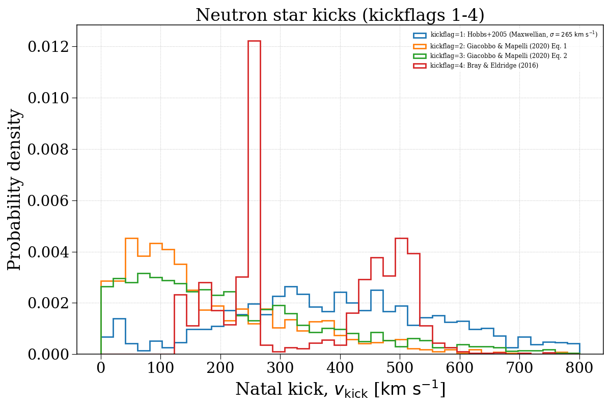
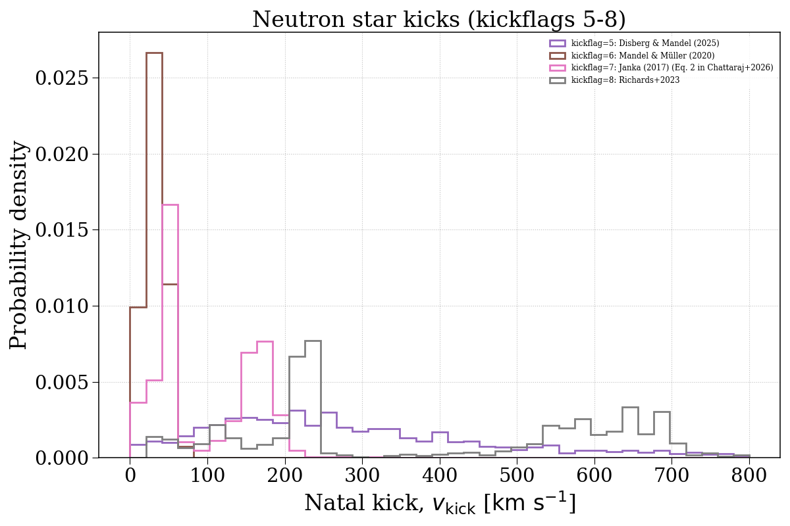
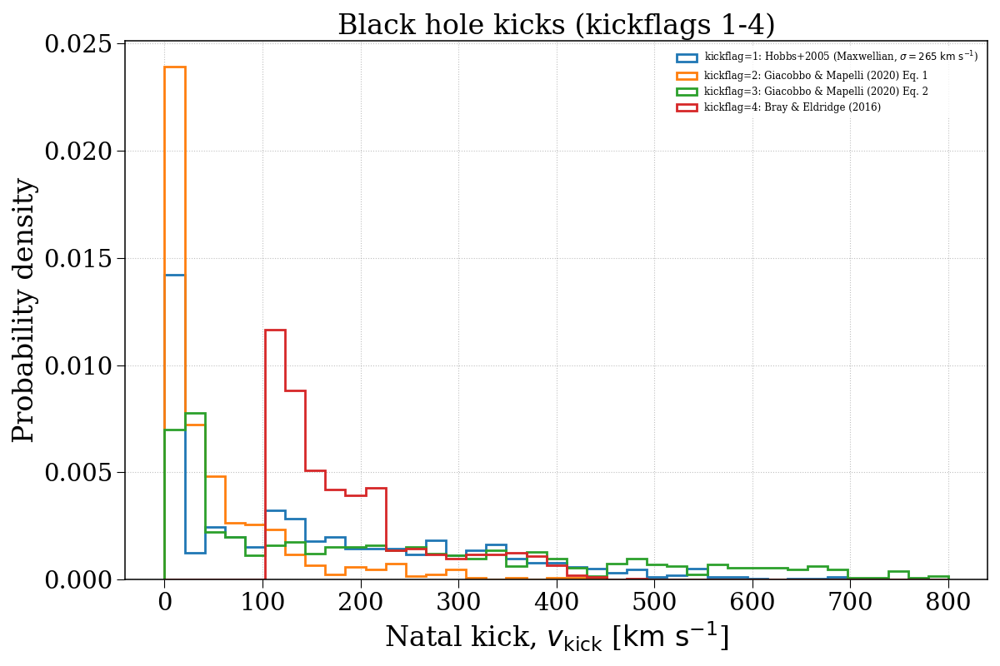
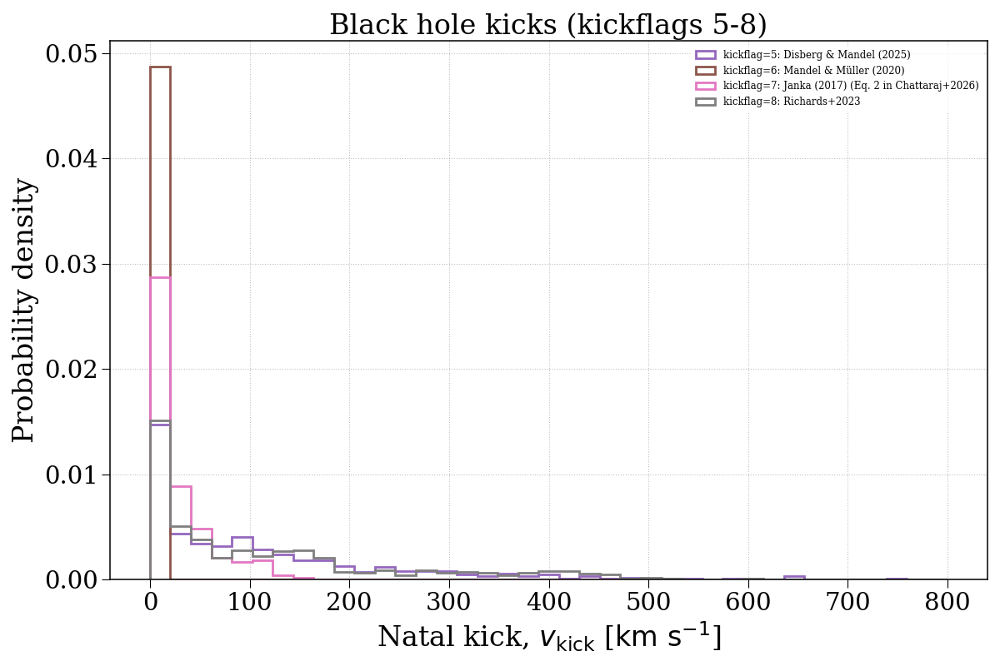

Note
Go to the end to download the full example code.
kickflag¶
This example demonstrates how changing the kickflag parameter can affect the natal kick velocity distributions of compact objects. We separate this into neutron stars and black holes.




Evolving population with kickflag = 1...
Evolving: 0%| | 0/2155 [00:00<?, ?sys/s]
Evolving: 2%|▏ | 33/2155 [00:00<00:06, 327.73sys/s]
Evolving: 3%|▎ | 66/2155 [00:00<00:10, 197.34sys/s]
Evolving: 4%|▍ | 89/2155 [00:00<00:12, 161.60sys/s]
Evolving: 5%|▌ | 109/2155 [00:00<00:12, 169.78sys/s]
Evolving: 6%|▌ | 128/2155 [00:00<00:12, 163.47sys/s]
Evolving: 7%|▋ | 146/2155 [00:00<00:14, 139.24sys/s]
Evolving: 7%|▋ | 161/2155 [00:01<00:16, 118.35sys/s]
Evolving: 8%|▊ | 179/2155 [00:01<00:17, 115.75sys/s]
Evolving: 9%|▉ | 192/2155 [00:01<00:18, 107.21sys/s]
Evolving: 10%|▉ | 211/2155 [00:01<00:16, 120.17sys/s]
Evolving: 10%|█ | 224/2155 [00:01<00:18, 107.09sys/s]
Evolving: 11%|█ | 236/2155 [00:01<00:18, 104.88sys/s]
Evolving: 11%|█▏ | 247/2155 [00:01<00:19, 100.12sys/s]
Evolving: 12%|█▏ | 269/2155 [00:02<00:15, 125.26sys/s]
Evolving: 13%|█▎ | 286/2155 [00:02<00:14, 131.33sys/s]
Evolving: 14%|█▍ | 300/2155 [00:02<00:18, 99.58sys/s]
Evolving: 15%|█▌ | 327/2155 [00:02<00:14, 126.10sys/s]
Evolving: 16%|█▌ | 350/2155 [00:02<00:12, 146.40sys/s]
Evolving: 17%|█▋ | 367/2155 [00:02<00:15, 114.25sys/s]
Evolving: 18%|█▊ | 389/2155 [00:03<00:16, 108.72sys/s]
Evolving: 19%|█▉ | 412/2155 [00:03<00:13, 130.86sys/s]
Evolving: 20%|█▉ | 428/2155 [00:03<00:16, 106.14sys/s]
Evolving: 21%|██ | 452/2155 [00:03<00:13, 127.55sys/s]
Evolving: 22%|██▏ | 471/2155 [00:03<00:12, 137.03sys/s]
Evolving: 23%|██▎ | 487/2155 [00:03<00:11, 140.69sys/s]
Evolving: 23%|██▎ | 503/2155 [00:03<00:14, 112.35sys/s]
Evolving: 24%|██▍ | 523/2155 [00:04<00:13, 124.45sys/s]
Evolving: 25%|██▍ | 537/2155 [00:04<00:15, 103.33sys/s]
Evolving: 26%|██▌ | 564/2155 [00:04<00:11, 135.56sys/s]
Evolving: 27%|██▋ | 580/2155 [00:04<00:11, 140.17sys/s]
Evolving: 28%|██▊ | 596/2155 [00:04<00:10, 143.09sys/s]
Evolving: 28%|██▊ | 612/2155 [00:04<00:10, 140.62sys/s]
Evolving: 29%|██▉ | 627/2155 [00:04<00:11, 138.72sys/s]
Evolving: 30%|██▉ | 644/2155 [00:05<00:14, 104.97sys/s]
Evolving: 31%|███ | 667/2155 [00:05<00:11, 129.57sys/s]
Evolving: 32%|███▏ | 682/2155 [00:05<00:12, 114.67sys/s]
Evolving: 33%|███▎ | 703/2155 [00:05<00:10, 132.81sys/s]
Evolving: 33%|███▎ | 718/2155 [00:05<00:10, 136.63sys/s]
Evolving: 34%|███▍ | 736/2155 [00:05<00:09, 146.71sys/s]
Evolving: 35%|███▍ | 752/2155 [00:05<00:11, 122.00sys/s]
Evolving: 36%|███▌ | 773/2155 [00:06<00:09, 139.17sys/s]
Evolving: 37%|███▋ | 789/2155 [00:06<00:09, 140.80sys/s]
Evolving: 37%|███▋ | 804/2155 [00:06<00:09, 138.92sys/s]
Evolving: 38%|███▊ | 819/2155 [00:06<00:09, 138.28sys/s]
Evolving: 39%|███▊ | 834/2155 [00:06<00:09, 138.46sys/s]
Evolving: 39%|███▉ | 849/2155 [00:06<00:09, 138.70sys/s]
Evolving: 40%|████ | 865/2155 [00:06<00:09, 143.33sys/s]
Evolving: 41%|████ | 880/2155 [00:06<00:10, 116.25sys/s]
Evolving: 42%|████▏ | 900/2155 [00:06<00:09, 136.03sys/s]
Evolving: 42%|████▏ | 915/2155 [00:07<00:12, 97.66sys/s]
Evolving: 44%|████▎ | 939/2155 [00:07<00:11, 109.68sys/s]
Evolving: 45%|████▍ | 968/2155 [00:07<00:08, 145.29sys/s]
Evolving: 46%|████▌ | 986/2155 [00:07<00:08, 139.62sys/s]
Evolving: 47%|████▋ | 1004/2155 [00:07<00:08, 141.68sys/s]
Evolving: 47%|████▋ | 1021/2155 [00:07<00:07, 147.37sys/s]
Evolving: 48%|████▊ | 1037/2155 [00:08<00:08, 138.94sys/s]
Evolving: 49%|████▉ | 1055/2155 [00:08<00:07, 142.93sys/s]
Evolving: 50%|████▉ | 1070/2155 [00:08<00:08, 134.91sys/s]
Evolving: 51%|█████ | 1091/2155 [00:08<00:07, 144.81sys/s]
Evolving: 51%|█████▏ | 1106/2155 [00:08<00:07, 143.10sys/s]
Evolving: 52%|█████▏ | 1126/2155 [00:08<00:06, 157.51sys/s]
Evolving: 53%|█████▎ | 1143/2155 [00:08<00:09, 108.81sys/s]
Evolving: 55%|█████▍ | 1178/2155 [00:08<00:06, 157.95sys/s]
Evolving: 56%|█████▌ | 1198/2155 [00:09<00:06, 148.19sys/s]
Evolving: 56%|█████▋ | 1216/2155 [00:09<00:07, 127.29sys/s]
Evolving: 57%|█████▋ | 1231/2155 [00:09<00:08, 113.06sys/s]
Evolving: 59%|█████▊ | 1261/2155 [00:09<00:06, 148.59sys/s]
Evolving: 59%|█████▉ | 1279/2155 [00:09<00:05, 147.44sys/s]
Evolving: 60%|██████ | 1296/2155 [00:09<00:05, 147.83sys/s]
Evolving: 61%|██████ | 1313/2155 [00:09<00:05, 142.54sys/s]
Evolving: 62%|██████▏ | 1329/2155 [00:10<00:06, 133.37sys/s]
Evolving: 63%|██████▎ | 1347/2155 [00:10<00:05, 144.40sys/s]
Evolving: 63%|██████▎ | 1363/2155 [00:10<00:05, 145.06sys/s]
Evolving: 64%|██████▍ | 1379/2155 [00:10<00:05, 143.18sys/s]
Evolving: 65%|██████▍ | 1394/2155 [00:10<00:05, 143.19sys/s]
Evolving: 65%|██████▌ | 1409/2155 [00:10<00:05, 141.14sys/s]
Evolving: 66%|██████▌ | 1424/2155 [00:10<00:06, 111.44sys/s]
Evolving: 67%|██████▋ | 1439/2155 [00:11<00:07, 97.29sys/s]
Evolving: 68%|██████▊ | 1473/2155 [00:11<00:05, 124.91sys/s]
Evolving: 69%|██████▉ | 1491/2155 [00:11<00:06, 105.31sys/s]
Evolving: 70%|███████ | 1509/2155 [00:11<00:05, 111.73sys/s]
Evolving: 71%|███████▏ | 1536/2155 [00:11<00:04, 131.41sys/s]
Evolving: 72%|███████▏ | 1550/2155 [00:11<00:04, 130.76sys/s]
Evolving: 73%|███████▎ | 1564/2155 [00:11<00:04, 131.96sys/s]
Evolving: 73%|███████▎ | 1578/2155 [00:12<00:04, 117.73sys/s]
Evolving: 74%|███████▍ | 1601/2155 [00:12<00:04, 128.31sys/s]
Evolving: 75%|███████▌ | 1623/2155 [00:12<00:03, 146.31sys/s]
Evolving: 76%|███████▌ | 1639/2155 [00:12<00:04, 110.31sys/s]
Evolving: 77%|███████▋ | 1653/2155 [00:12<00:05, 99.16sys/s]
Evolving: 78%|███████▊ | 1684/2155 [00:12<00:03, 138.55sys/s]
Evolving: 79%|███████▉ | 1701/2155 [00:13<00:03, 134.28sys/s]
Evolving: 80%|███████▉ | 1717/2155 [00:13<00:03, 132.58sys/s]
Evolving: 80%|████████ | 1732/2155 [00:13<00:04, 102.33sys/s]
Evolving: 82%|████████▏ | 1760/2155 [00:13<00:02, 136.86sys/s]
Evolving: 82%|████████▏ | 1777/2155 [00:13<00:02, 137.16sys/s]
Evolving: 83%|████████▎ | 1794/2155 [00:13<00:02, 141.41sys/s]
Evolving: 84%|████████▍ | 1810/2155 [00:13<00:02, 140.16sys/s]
Evolving: 85%|████████▍ | 1826/2155 [00:14<00:02, 138.37sys/s]
Evolving: 85%|████████▌ | 1841/2155 [00:14<00:02, 138.29sys/s]
Evolving: 86%|████████▌ | 1856/2155 [00:14<00:02, 101.73sys/s]
Evolving: 87%|████████▋ | 1880/2155 [00:14<00:02, 99.34sys/s]
Evolving: 88%|████████▊ | 1905/2155 [00:14<00:01, 127.34sys/s]
Evolving: 89%|████████▉ | 1921/2155 [00:14<00:02, 100.85sys/s]
Evolving: 91%|█████████ | 1951/2155 [00:15<00:01, 136.92sys/s]
Evolving: 91%|█████████▏| 1969/2155 [00:15<00:01, 127.99sys/s]
Evolving: 92%|█████████▏| 1985/2155 [00:15<00:01, 98.36sys/s]
Evolving: 93%|█████████▎| 2012/2155 [00:15<00:01, 126.40sys/s]
Evolving: 94%|█████████▍| 2029/2155 [00:15<00:01, 102.30sys/s]
Evolving: 95%|█████████▌| 2055/2155 [00:16<00:00, 102.90sys/s]
Evolving: 97%|█████████▋| 2086/2155 [00:16<00:00, 135.56sys/s]
Evolving: 98%|█████████▊| 2104/2155 [00:16<00:00, 112.85sys/s]
Evolving: 99%|█████████▉| 2131/2155 [00:16<00:00, 135.95sys/s]
Evolving: 100%|█████████▉| 2148/2155 [00:16<00:00, 138.02sys/s]
Evolving: 100%|██████████| 2155/2155 [00:16<00:00, 128.41sys/s]
[Time taken: 17.1333 seconds]
Evolving population with kickflag = 2...
Evolving: 0%| | 0/2155 [00:00<?, ?sys/s]
Evolving: 0%| | 9/2155 [00:00<00:27, 77.69sys/s]
Evolving: 1%| | 19/2155 [00:00<00:25, 84.38sys/s]
Evolving: 2%|▏ | 41/2155 [00:00<00:15, 140.73sys/s]
Evolving: 3%|▎ | 56/2155 [00:00<00:15, 137.18sys/s]
Evolving: 3%|▎ | 74/2155 [00:00<00:14, 147.92sys/s]
Evolving: 4%|▍ | 89/2155 [00:00<00:14, 138.17sys/s]
Evolving: 5%|▌ | 108/2155 [00:00<00:13, 150.49sys/s]
Evolving: 6%|▌ | 124/2155 [00:00<00:13, 151.46sys/s]
Evolving: 6%|▋ | 140/2155 [00:01<00:18, 110.74sys/s]
Evolving: 7%|▋ | 158/2155 [00:01<00:17, 116.48sys/s]
Evolving: 8%|▊ | 176/2155 [00:01<00:15, 130.26sys/s]
Evolving: 9%|▉ | 191/2155 [00:01<00:19, 102.20sys/s]
Evolving: 10%|▉ | 211/2155 [00:01<00:16, 115.49sys/s]
Evolving: 10%|█ | 224/2155 [00:01<00:18, 105.24sys/s]
Evolving: 11%|█ | 236/2155 [00:01<00:18, 103.82sys/s]
Evolving: 12%|█▏ | 248/2155 [00:02<00:18, 100.43sys/s]
Evolving: 13%|█▎ | 271/2155 [00:02<00:14, 129.37sys/s]
Evolving: 13%|█▎ | 288/2155 [00:02<00:13, 134.11sys/s]
Evolving: 14%|█▍ | 303/2155 [00:02<00:17, 104.34sys/s]
Evolving: 15%|█▌ | 327/2155 [00:02<00:14, 124.33sys/s]
Evolving: 16%|█▌ | 346/2155 [00:02<00:13, 137.71sys/s]
Evolving: 17%|█▋ | 362/2155 [00:03<00:17, 101.75sys/s]
Evolving: 18%|█▊ | 389/2155 [00:03<00:15, 114.25sys/s]
Evolving: 19%|█▊ | 402/2155 [00:03<00:15, 116.58sys/s]
Evolving: 20%|█▉ | 424/2155 [00:03<00:16, 101.94sys/s]
Evolving: 21%|██ | 452/2155 [00:03<00:13, 130.57sys/s]
Evolving: 22%|██▏ | 474/2155 [00:03<00:11, 148.36sys/s]
Evolving: 23%|██▎ | 492/2155 [00:04<00:15, 109.73sys/s]
Evolving: 24%|██▍ | 515/2155 [00:04<00:13, 125.86sys/s]
Evolving: 25%|██▍ | 532/2155 [00:04<00:15, 104.82sys/s]
Evolving: 26%|██▌ | 563/2155 [00:04<00:11, 141.76sys/s]
Evolving: 27%|██▋ | 582/2155 [00:04<00:10, 146.42sys/s]
Evolving: 28%|██▊ | 600/2155 [00:04<00:10, 147.48sys/s]
Evolving: 29%|██▊ | 617/2155 [00:04<00:10, 145.44sys/s]
Evolving: 29%|██▉ | 633/2155 [00:05<00:10, 145.87sys/s]
Evolving: 30%|███ | 649/2155 [00:05<00:13, 114.58sys/s]
Evolving: 31%|███ | 665/2155 [00:05<00:12, 123.37sys/s]
Evolving: 32%|███▏ | 679/2155 [00:05<00:14, 105.07sys/s]
Evolving: 33%|███▎ | 705/2155 [00:05<00:10, 131.94sys/s]
Evolving: 34%|███▎ | 727/2155 [00:05<00:10, 141.15sys/s]
Evolving: 34%|███▍ | 743/2155 [00:06<00:12, 110.32sys/s]
Evolving: 36%|███▌ | 776/2155 [00:06<00:09, 148.85sys/s]
Evolving: 37%|███▋ | 794/2155 [00:06<00:09, 147.76sys/s]
Evolving: 38%|███▊ | 811/2155 [00:06<00:09, 145.39sys/s]
Evolving: 38%|███▊ | 827/2155 [00:06<00:09, 141.36sys/s]
Evolving: 39%|███▉ | 842/2155 [00:06<00:09, 143.24sys/s]
Evolving: 40%|███▉ | 857/2155 [00:06<00:08, 144.78sys/s]
Evolving: 40%|████ | 872/2155 [00:07<00:12, 105.76sys/s]
Evolving: 41%|████▏ | 894/2155 [00:07<00:09, 126.36sys/s]
Evolving: 42%|████▏ | 914/2155 [00:07<00:12, 101.61sys/s]
Evolving: 44%|████▎ | 939/2155 [00:07<00:11, 109.69sys/s]
Evolving: 45%|████▌ | 972/2155 [00:07<00:08, 145.91sys/s]
Evolving: 46%|████▌ | 990/2155 [00:07<00:07, 146.98sys/s]
Evolving: 47%|████▋ | 1007/2155 [00:07<00:07, 149.22sys/s]
Evolving: 48%|████▊ | 1024/2155 [00:08<00:07, 147.88sys/s]
Evolving: 48%|████▊ | 1040/2155 [00:08<00:07, 147.62sys/s]
Evolving: 49%|████▉ | 1056/2155 [00:08<00:07, 146.65sys/s]
Evolving: 50%|████▉ | 1072/2155 [00:08<00:07, 136.57sys/s]
Evolving: 51%|█████ | 1092/2155 [00:08<00:07, 150.47sys/s]
Evolving: 51%|█████▏ | 1108/2155 [00:08<00:06, 150.25sys/s]
Evolving: 52%|█████▏ | 1125/2155 [00:08<00:06, 154.75sys/s]
Evolving: 53%|█████▎ | 1141/2155 [00:09<00:09, 106.18sys/s]
Evolving: 54%|█████▍ | 1173/2155 [00:09<00:06, 151.19sys/s]
Evolving: 55%|█████▌ | 1192/2155 [00:09<00:06, 152.68sys/s]
Evolving: 56%|█████▌ | 1210/2155 [00:09<00:08, 112.56sys/s]
Evolving: 57%|█████▋ | 1228/2155 [00:09<00:08, 109.91sys/s]
Evolving: 59%|█████▊ | 1262/2155 [00:09<00:05, 154.51sys/s]
Evolving: 59%|█████▉ | 1282/2155 [00:09<00:05, 151.17sys/s]
Evolving: 60%|██████ | 1300/2155 [00:10<00:05, 148.59sys/s]
Evolving: 61%|██████ | 1317/2155 [00:10<00:05, 140.37sys/s]
Evolving: 62%|██████▏ | 1333/2155 [00:10<00:05, 138.79sys/s]
Evolving: 63%|██████▎ | 1350/2155 [00:10<00:05, 146.22sys/s]
Evolving: 63%|██████▎ | 1366/2155 [00:10<00:05, 147.54sys/s]
Evolving: 64%|██████▍ | 1382/2155 [00:10<00:05, 146.50sys/s]
Evolving: 65%|██████▍ | 1398/2155 [00:10<00:05, 138.46sys/s]
Evolving: 66%|██████▌ | 1415/2155 [00:10<00:05, 139.05sys/s]
Evolving: 66%|██████▋ | 1430/2155 [00:11<00:05, 123.00sys/s]
Evolving: 67%|██████▋ | 1443/2155 [00:11<00:07, 100.25sys/s]
Evolving: 68%|██████▊ | 1471/2155 [00:11<00:04, 138.12sys/s]
Evolving: 69%|██████▉ | 1487/2155 [00:11<00:04, 136.52sys/s]
Evolving: 70%|██████▉ | 1502/2155 [00:11<00:05, 116.16sys/s]
Evolving: 70%|███████ | 1515/2155 [00:11<00:06, 105.42sys/s]
Evolving: 71%|███████▏ | 1536/2155 [00:11<00:05, 119.15sys/s]
Evolving: 72%|███████▏ | 1549/2155 [00:12<00:05, 120.57sys/s]
Evolving: 73%|███████▎ | 1571/2155 [00:12<00:04, 140.15sys/s]
Evolving: 74%|███████▎ | 1586/2155 [00:12<00:04, 130.22sys/s]
Evolving: 74%|███████▍ | 1601/2155 [00:12<00:04, 125.16sys/s]
Evolving: 75%|███████▌ | 1618/2155 [00:12<00:04, 133.70sys/s]
Evolving: 76%|███████▌ | 1632/2155 [00:12<00:05, 93.03sys/s]
Evolving: 77%|███████▋ | 1653/2155 [00:13<00:04, 101.57sys/s]
Evolving: 78%|███████▊ | 1682/2155 [00:13<00:03, 139.03sys/s]
Evolving: 79%|███████▉ | 1699/2155 [00:13<00:03, 135.21sys/s]
Evolving: 80%|███████▉ | 1715/2155 [00:13<00:03, 130.94sys/s]
Evolving: 80%|████████ | 1730/2155 [00:13<00:03, 106.43sys/s]
Evolving: 81%|████████▏ | 1755/2155 [00:13<00:02, 135.46sys/s]
Evolving: 82%|████████▏ | 1771/2155 [00:13<00:02, 139.31sys/s]
Evolving: 83%|████████▎ | 1787/2155 [00:13<00:02, 143.29sys/s]
Evolving: 84%|████████▎ | 1803/2155 [00:14<00:02, 124.88sys/s]
Evolving: 84%|████████▍ | 1817/2155 [00:14<00:02, 125.43sys/s]
Evolving: 85%|████████▌ | 1837/2155 [00:14<00:02, 142.71sys/s]
Evolving: 86%|████████▌ | 1854/2155 [00:14<00:02, 132.86sys/s]
Evolving: 87%|████████▋ | 1869/2155 [00:14<00:02, 123.33sys/s]
Evolving: 87%|████████▋ | 1882/2155 [00:14<00:02, 100.45sys/s]
Evolving: 88%|████████▊ | 1903/2155 [00:14<00:02, 122.66sys/s]
Evolving: 89%|████████▉ | 1919/2155 [00:15<00:02, 92.87sys/s]
Evolving: 91%|█████████ | 1952/2155 [00:15<00:01, 131.28sys/s]
Evolving: 91%|█████████▏| 1968/2155 [00:15<00:01, 123.62sys/s]
Evolving: 92%|█████████▏| 1983/2155 [00:15<00:01, 94.97sys/s]
Evolving: 93%|█████████▎| 2012/2155 [00:15<00:01, 124.83sys/s]
Evolving: 94%|█████████▍| 2028/2155 [00:16<00:01, 101.91sys/s]
Evolving: 95%|█████████▌| 2055/2155 [00:16<00:00, 108.04sys/s]
Evolving: 97%|█████████▋| 2083/2155 [00:16<00:00, 137.53sys/s]
Evolving: 97%|█████████▋| 2100/2155 [00:16<00:00, 111.28sys/s]
Evolving: 99%|█████████▊| 2126/2155 [00:16<00:00, 137.44sys/s]
Evolving: 100%|█████████▉| 2145/2155 [00:16<00:00, 142.38sys/s]
Evolving: 100%|██████████| 2155/2155 [00:16<00:00, 127.22sys/s]
[Time taken: 17.0995 seconds]
Evolving population with kickflag = 3...
Evolving: 0%| | 0/2155 [00:00<?, ?sys/s]
Evolving: 0%| | 9/2155 [00:00<00:25, 83.75sys/s]
Evolving: 1%| | 19/2155 [00:00<00:23, 89.62sys/s]
Evolving: 2%|▏ | 39/2155 [00:00<00:15, 136.80sys/s]
Evolving: 2%|▏ | 53/2155 [00:00<00:15, 135.99sys/s]
Evolving: 3%|▎ | 68/2155 [00:00<00:15, 137.57sys/s]
Evolving: 4%|▍ | 84/2155 [00:00<00:14, 142.55sys/s]
Evolving: 5%|▍ | 101/2155 [00:00<00:14, 144.32sys/s]
Evolving: 5%|▌ | 116/2155 [00:00<00:14, 144.52sys/s]
Evolving: 6%|▌ | 131/2155 [00:01<00:19, 101.38sys/s]
Evolving: 7%|▋ | 158/2155 [00:01<00:16, 119.41sys/s]
Evolving: 8%|▊ | 179/2155 [00:01<00:15, 125.44sys/s]
Evolving: 9%|▉ | 193/2155 [00:01<00:17, 111.36sys/s]
Evolving: 10%|▉ | 211/2155 [00:01<00:15, 122.65sys/s]
Evolving: 10%|█ | 225/2155 [00:01<00:17, 111.20sys/s]
Evolving: 11%|█ | 237/2155 [00:02<00:18, 103.45sys/s]
Evolving: 12%|█▏ | 248/2155 [00:02<00:19, 99.84sys/s]
Evolving: 13%|█▎ | 270/2155 [00:02<00:14, 127.79sys/s]
Evolving: 13%|█▎ | 287/2155 [00:02<00:13, 137.50sys/s]
Evolving: 14%|█▍ | 302/2155 [00:02<00:18, 101.85sys/s]
Evolving: 15%|█▌ | 327/2155 [00:02<00:14, 124.89sys/s]
Evolving: 16%|█▌ | 345/2155 [00:02<00:13, 136.15sys/s]
Evolving: 17%|█▋ | 361/2155 [00:03<00:17, 103.80sys/s]
Evolving: 18%|█▊ | 389/2155 [00:03<00:15, 110.84sys/s]
Evolving: 19%|█▉ | 412/2155 [00:03<00:13, 129.47sys/s]
Evolving: 20%|█▉ | 427/2155 [00:03<00:16, 101.91sys/s]
Evolving: 21%|██▏ | 458/2155 [00:03<00:12, 138.78sys/s]
Evolving: 22%|██▏ | 476/2155 [00:03<00:11, 140.02sys/s]
Evolving: 23%|██▎ | 493/2155 [00:04<00:15, 107.69sys/s]
Evolving: 24%|██▍ | 513/2155 [00:04<00:13, 124.74sys/s]
Evolving: 25%|██▍ | 532/2155 [00:04<00:16, 101.07sys/s]
Evolving: 26%|██▌ | 556/2155 [00:04<00:12, 123.99sys/s]
Evolving: 27%|██▋ | 579/2155 [00:04<00:10, 145.02sys/s]
Evolving: 28%|██▊ | 597/2155 [00:04<00:10, 149.58sys/s]
Evolving: 29%|██▊ | 615/2155 [00:04<00:10, 144.05sys/s]
Evolving: 29%|██▉ | 632/2155 [00:05<00:10, 148.98sys/s]
Evolving: 30%|███ | 649/2155 [00:05<00:12, 119.06sys/s]
Evolving: 31%|███ | 665/2155 [00:05<00:11, 126.03sys/s]
Evolving: 32%|███▏ | 680/2155 [00:05<00:13, 111.62sys/s]
Evolving: 33%|███▎ | 701/2155 [00:05<00:11, 130.83sys/s]
Evolving: 33%|███▎ | 720/2155 [00:05<00:10, 140.62sys/s]
Evolving: 34%|███▍ | 736/2155 [00:05<00:09, 143.40sys/s]
Evolving: 35%|███▍ | 752/2155 [00:06<00:11, 125.63sys/s]
Evolving: 36%|███▌ | 769/2155 [00:06<00:10, 133.76sys/s]
Evolving: 36%|███▋ | 786/2155 [00:06<00:09, 140.79sys/s]
Evolving: 37%|███▋ | 801/2155 [00:06<00:09, 136.53sys/s]
Evolving: 38%|███▊ | 818/2155 [00:06<00:09, 144.14sys/s]
Evolving: 39%|███▊ | 834/2155 [00:06<00:09, 142.69sys/s]
Evolving: 39%|███▉ | 849/2155 [00:06<00:09, 139.58sys/s]
Evolving: 40%|████ | 865/2155 [00:06<00:09, 141.71sys/s]
Evolving: 41%|████ | 880/2155 [00:07<00:10, 123.53sys/s]
Evolving: 41%|████▏ | 894/2155 [00:07<00:10, 125.66sys/s]
Evolving: 42%|████▏ | 913/2155 [00:07<00:09, 137.82sys/s]
Evolving: 43%|████▎ | 928/2155 [00:07<00:10, 118.37sys/s]
Evolving: 44%|████▎ | 941/2155 [00:07<00:11, 103.44sys/s]
Evolving: 45%|████▍ | 968/2155 [00:07<00:08, 140.06sys/s]
Evolving: 46%|████▌ | 984/2155 [00:07<00:08, 138.33sys/s]
Evolving: 46%|████▋ | 999/2155 [00:07<00:08, 140.88sys/s]
Evolving: 47%|████▋ | 1014/2155 [00:08<00:08, 138.12sys/s]
Evolving: 48%|████▊ | 1032/2155 [00:08<00:07, 148.75sys/s]
Evolving: 49%|████▊ | 1048/2155 [00:08<00:07, 143.18sys/s]
Evolving: 49%|████▉ | 1065/2155 [00:08<00:07, 144.61sys/s]
Evolving: 50%|█████ | 1080/2155 [00:08<00:08, 132.76sys/s]
Evolving: 51%|█████ | 1099/2155 [00:08<00:07, 146.26sys/s]
Evolving: 52%|█████▏ | 1116/2155 [00:08<00:07, 146.89sys/s]
Evolving: 53%|█████▎ | 1132/2155 [00:08<00:07, 143.51sys/s]
Evolving: 53%|█████▎ | 1147/2155 [00:09<00:08, 114.33sys/s]
Evolving: 55%|█████▍ | 1175/2155 [00:09<00:06, 152.16sys/s]
Evolving: 55%|█████▌ | 1192/2155 [00:09<00:06, 154.65sys/s]
Evolving: 56%|█████▌ | 1209/2155 [00:09<00:08, 108.71sys/s]
Evolving: 57%|█████▋ | 1228/2155 [00:09<00:08, 115.22sys/s]
Evolving: 58%|█████▊ | 1260/2155 [00:09<00:06, 148.19sys/s]
Evolving: 59%|█████▉ | 1277/2155 [00:09<00:05, 148.59sys/s]
Evolving: 60%|██████ | 1295/2155 [00:10<00:05, 148.13sys/s]
Evolving: 61%|██████ | 1311/2155 [00:10<00:05, 145.20sys/s]
Evolving: 62%|██████▏ | 1327/2155 [00:10<00:05, 143.67sys/s]
Evolving: 62%|██████▏ | 1342/2155 [00:10<00:05, 137.02sys/s]
Evolving: 63%|██████▎ | 1360/2155 [00:10<00:05, 144.19sys/s]
Evolving: 64%|██████▍ | 1377/2155 [00:10<00:05, 141.70sys/s]
Evolving: 65%|██████▍ | 1393/2155 [00:10<00:05, 145.17sys/s]
Evolving: 65%|██████▌ | 1408/2155 [00:10<00:05, 141.97sys/s]
Evolving: 66%|██████▌ | 1423/2155 [00:11<00:07, 98.68sys/s]
Evolving: 67%|██████▋ | 1439/2155 [00:11<00:07, 97.92sys/s]
Evolving: 68%|██████▊ | 1472/2155 [00:11<00:04, 145.22sys/s]
Evolving: 69%|██████▉ | 1490/2155 [00:11<00:04, 139.91sys/s]
Evolving: 70%|██████▉ | 1506/2155 [00:11<00:05, 122.51sys/s]
Evolving: 71%|███████ | 1520/2155 [00:11<00:05, 118.21sys/s]
Evolving: 71%|███████▏ | 1536/2155 [00:11<00:05, 117.79sys/s]
Evolving: 72%|███████▏ | 1549/2155 [00:12<00:05, 118.54sys/s]
Evolving: 73%|███████▎ | 1563/2155 [00:12<00:04, 118.62sys/s]
Evolving: 73%|███████▎ | 1576/2155 [00:12<00:05, 110.42sys/s]
Evolving: 74%|███████▍ | 1595/2155 [00:12<00:04, 125.66sys/s]
Evolving: 75%|███████▍ | 1616/2155 [00:12<00:03, 143.12sys/s]
Evolving: 76%|███████▌ | 1632/2155 [00:12<00:05, 103.16sys/s]
Evolving: 77%|███████▋ | 1653/2155 [00:13<00:04, 105.29sys/s]
Evolving: 78%|███████▊ | 1681/2155 [00:13<00:03, 134.15sys/s]
Evolving: 79%|███████▊ | 1697/2155 [00:13<00:03, 132.56sys/s]
Evolving: 79%|███████▉ | 1713/2155 [00:13<00:03, 130.94sys/s]
Evolving: 80%|████████ | 1727/2155 [00:13<00:04, 102.79sys/s]
Evolving: 81%|████████▏ | 1755/2155 [00:13<00:02, 136.86sys/s]
Evolving: 82%|████████▏ | 1771/2155 [00:13<00:02, 138.40sys/s]
Evolving: 83%|████████▎ | 1789/2155 [00:13<00:02, 144.90sys/s]
Evolving: 84%|████████▍ | 1805/2155 [00:14<00:02, 135.11sys/s]
Evolving: 85%|████████▍ | 1822/2155 [00:14<00:02, 139.50sys/s]
Evolving: 85%|████████▌ | 1839/2155 [00:14<00:02, 145.89sys/s]
Evolving: 86%|████████▌ | 1855/2155 [00:14<00:02, 105.64sys/s]
Evolving: 87%|████████▋ | 1879/2155 [00:14<00:02, 131.08sys/s]
Evolving: 88%|████████▊ | 1895/2155 [00:14<00:02, 106.92sys/s]
Evolving: 89%|████████▉ | 1917/2155 [00:14<00:01, 129.45sys/s]
Evolving: 90%|████████▉ | 1933/2155 [00:15<00:01, 115.03sys/s]
Evolving: 90%|█████████ | 1950/2155 [00:15<00:01, 126.66sys/s]
Evolving: 91%|█████████ | 1965/2155 [00:15<00:01, 120.81sys/s]
Evolving: 92%|█████████▏| 1979/2155 [00:15<00:01, 122.27sys/s]
Evolving: 92%|█████████▏| 1993/2155 [00:15<00:01, 104.40sys/s]
Evolving: 93%|█████████▎| 2012/2155 [00:15<00:01, 112.26sys/s]
Evolving: 94%|█████████▍| 2024/2155 [00:16<00:01, 86.91sys/s]
Evolving: 95%|█████████▌| 2055/2155 [00:16<00:01, 99.50sys/s]
Evolving: 97%|█████████▋| 2091/2155 [00:16<00:00, 142.71sys/s]
Evolving: 98%|█████████▊| 2109/2155 [00:16<00:00, 120.79sys/s]
Evolving: 99%|█████████▉| 2131/2155 [00:16<00:00, 138.25sys/s]
Evolving: 100%|█████████▉| 2148/2155 [00:16<00:00, 139.37sys/s]
Evolving: 100%|██████████| 2155/2155 [00:16<00:00, 127.15sys/s]
[Time taken: 17.1157 seconds]
Evolving population with kickflag = 4...
Evolving: 0%| | 0/2155 [00:00<?, ?sys/s]
Evolving: 0%| | 9/2155 [00:00<00:25, 84.02sys/s]
Evolving: 1%| | 19/2155 [00:00<00:23, 92.38sys/s]
Evolving: 2%|▏ | 40/2155 [00:00<00:15, 139.76sys/s]
Evolving: 3%|▎ | 54/2155 [00:00<00:15, 137.96sys/s]
Evolving: 3%|▎ | 71/2155 [00:00<00:14, 145.35sys/s]
Evolving: 4%|▍ | 88/2155 [00:00<00:15, 135.08sys/s]
Evolving: 5%|▌ | 108/2155 [00:00<00:13, 150.86sys/s]
Evolving: 6%|▌ | 124/2155 [00:00<00:13, 148.68sys/s]
Evolving: 6%|▋ | 139/2155 [00:01<00:17, 117.19sys/s]
Evolving: 7%|▋ | 156/2155 [00:01<00:15, 127.32sys/s]
Evolving: 8%|▊ | 170/2155 [00:01<00:16, 120.12sys/s]
Evolving: 9%|▊ | 185/2155 [00:01<00:21, 93.17sys/s]
Evolving: 10%|▉ | 211/2155 [00:01<00:16, 119.43sys/s]
Evolving: 10%|█ | 225/2155 [00:01<00:19, 98.56sys/s]
Evolving: 11%|█ | 239/2155 [00:02<00:21, 88.53sys/s]
Evolving: 13%|█▎ | 270/2155 [00:02<00:15, 125.09sys/s]
Evolving: 13%|█▎ | 288/2155 [00:02<00:14, 132.55sys/s]
Evolving: 14%|█▍ | 303/2155 [00:02<00:17, 107.67sys/s]
Evolving: 15%|█▌ | 327/2155 [00:02<00:14, 125.66sys/s]
Evolving: 16%|█▌ | 347/2155 [00:02<00:12, 140.94sys/s]
Evolving: 17%|█▋ | 363/2155 [00:03<00:16, 105.66sys/s]
Evolving: 18%|█▊ | 389/2155 [00:03<00:16, 109.59sys/s]
Evolving: 19%|█▉ | 410/2155 [00:03<00:13, 126.88sys/s]
Evolving: 20%|█▉ | 425/2155 [00:03<00:17, 100.27sys/s]
Evolving: 21%|██ | 452/2155 [00:03<00:13, 127.44sys/s]
Evolving: 22%|██▏ | 469/2155 [00:03<00:12, 135.20sys/s]
Evolving: 23%|██▎ | 486/2155 [00:03<00:11, 141.20sys/s]
Evolving: 23%|██▎ | 502/2155 [00:04<00:14, 112.74sys/s]
Evolving: 24%|██▍ | 521/2155 [00:04<00:12, 126.35sys/s]
Evolving: 25%|██▍ | 536/2155 [00:04<00:16, 97.42sys/s]
Evolving: 26%|██▋ | 567/2155 [00:04<00:11, 133.91sys/s]
Evolving: 27%|██▋ | 584/2155 [00:04<00:11, 141.48sys/s]
Evolving: 28%|██▊ | 601/2155 [00:04<00:10, 146.68sys/s]
Evolving: 29%|██▊ | 618/2155 [00:05<00:10, 141.97sys/s]
Evolving: 29%|██▉ | 634/2155 [00:05<00:10, 144.90sys/s]
Evolving: 30%|███ | 650/2155 [00:05<00:12, 118.86sys/s]
Evolving: 31%|███ | 665/2155 [00:05<00:11, 125.18sys/s]
Evolving: 32%|███▏ | 679/2155 [00:05<00:14, 104.68sys/s]
Evolving: 33%|███▎ | 705/2155 [00:05<00:10, 136.83sys/s]
Evolving: 33%|███▎ | 721/2155 [00:05<00:10, 139.06sys/s]
Evolving: 34%|███▍ | 738/2155 [00:05<00:09, 145.77sys/s]
Evolving: 35%|███▍ | 754/2155 [00:06<00:11, 121.89sys/s]
Evolving: 36%|███▌ | 775/2155 [00:06<00:09, 139.81sys/s]
Evolving: 37%|███▋ | 792/2155 [00:06<00:09, 139.49sys/s]
Evolving: 37%|███▋ | 807/2155 [00:06<00:09, 138.47sys/s]
Evolving: 38%|███▊ | 822/2155 [00:06<00:10, 131.52sys/s]
Evolving: 39%|███▉ | 840/2155 [00:06<00:09, 141.77sys/s]
Evolving: 40%|███▉ | 858/2155 [00:06<00:08, 148.15sys/s]
Evolving: 41%|████ | 874/2155 [00:07<00:11, 107.21sys/s]
Evolving: 42%|████▏ | 902/2155 [00:07<00:08, 142.24sys/s]
Evolving: 43%|████▎ | 919/2155 [00:07<00:11, 110.82sys/s]
Evolving: 44%|████▎ | 939/2155 [00:07<00:10, 110.85sys/s]
Evolving: 45%|████▍ | 968/2155 [00:07<00:08, 142.13sys/s]
Evolving: 46%|████▌ | 985/2155 [00:07<00:08, 144.84sys/s]
Evolving: 46%|████▋ | 1002/2155 [00:07<00:07, 145.60sys/s]
Evolving: 47%|████▋ | 1018/2155 [00:08<00:07, 143.28sys/s]
Evolving: 48%|████▊ | 1034/2155 [00:08<00:08, 131.40sys/s]
Evolving: 49%|████▉ | 1054/2155 [00:08<00:07, 145.99sys/s]
Evolving: 50%|████▉ | 1070/2155 [00:08<00:07, 136.21sys/s]
Evolving: 51%|█████ | 1091/2155 [00:08<00:06, 152.90sys/s]
Evolving: 51%|█████▏ | 1108/2155 [00:08<00:06, 151.39sys/s]
Evolving: 52%|█████▏ | 1124/2155 [00:08<00:06, 153.31sys/s]
Evolving: 53%|█████▎ | 1140/2155 [00:09<00:09, 105.64sys/s]
Evolving: 55%|█████▍ | 1175/2155 [00:09<00:06, 154.99sys/s]
Evolving: 55%|█████▌ | 1194/2155 [00:09<00:06, 153.62sys/s]
Evolving: 56%|█████▌ | 1212/2155 [00:09<00:07, 120.72sys/s]
Evolving: 57%|█████▋ | 1228/2155 [00:09<00:08, 110.50sys/s]
Evolving: 59%|█████▊ | 1261/2155 [00:09<00:05, 152.63sys/s]
Evolving: 59%|█████▉ | 1280/2155 [00:09<00:05, 147.65sys/s]
Evolving: 60%|██████ | 1297/2155 [00:10<00:05, 145.45sys/s]
Evolving: 61%|██████ | 1314/2155 [00:10<00:05, 143.64sys/s]
Evolving: 62%|██████▏ | 1330/2155 [00:10<00:05, 138.98sys/s]
Evolving: 62%|██████▏ | 1345/2155 [00:10<00:05, 140.86sys/s]
Evolving: 63%|██████▎ | 1363/2155 [00:10<00:05, 149.89sys/s]
Evolving: 64%|██████▍ | 1379/2155 [00:10<00:05, 135.02sys/s]
Evolving: 65%|██████▍ | 1395/2155 [00:10<00:05, 135.83sys/s]
Evolving: 66%|██████▌ | 1415/2155 [00:10<00:05, 145.56sys/s]
Evolving: 66%|██████▋ | 1430/2155 [00:11<00:05, 130.39sys/s]
Evolving: 67%|██████▋ | 1444/2155 [00:11<00:06, 104.76sys/s]
Evolving: 68%|██████▊ | 1471/2155 [00:11<00:04, 140.86sys/s]
Evolving: 69%|██████▉ | 1488/2155 [00:11<00:04, 136.27sys/s]
Evolving: 70%|██████▉ | 1504/2155 [00:11<00:05, 120.36sys/s]
Evolving: 70%|███████ | 1518/2155 [00:11<00:05, 108.13sys/s]
Evolving: 71%|███████▏ | 1536/2155 [00:11<00:05, 115.74sys/s]
Evolving: 72%|███████▏ | 1556/2155 [00:12<00:04, 133.45sys/s]
Evolving: 73%|███████▎ | 1571/2155 [00:12<00:04, 133.01sys/s]
Evolving: 74%|███████▎ | 1586/2155 [00:12<00:04, 121.10sys/s]
Evolving: 74%|███████▍ | 1601/2155 [00:12<00:04, 118.64sys/s]
Evolving: 75%|███████▌ | 1621/2155 [00:12<00:03, 137.51sys/s]
Evolving: 76%|███████▌ | 1636/2155 [00:12<00:04, 104.42sys/s]
Evolving: 77%|███████▋ | 1653/2155 [00:12<00:04, 102.50sys/s]
Evolving: 78%|███████▊ | 1680/2155 [00:13<00:03, 131.86sys/s]
Evolving: 79%|███████▊ | 1695/2155 [00:13<00:03, 129.37sys/s]
Evolving: 79%|███████▉ | 1713/2155 [00:13<00:03, 129.79sys/s]
Evolving: 80%|████████ | 1727/2155 [00:13<00:04, 103.54sys/s]
Evolving: 81%|████████▏ | 1753/2155 [00:13<00:03, 133.48sys/s]
Evolving: 82%|████████▏ | 1770/2155 [00:13<00:02, 134.89sys/s]
Evolving: 83%|████████▎ | 1788/2155 [00:13<00:02, 141.39sys/s]
Evolving: 84%|████████▎ | 1804/2155 [00:14<00:02, 134.40sys/s]
Evolving: 84%|████████▍ | 1820/2155 [00:14<00:02, 140.02sys/s]
Evolving: 85%|████████▌ | 1837/2155 [00:14<00:02, 138.13sys/s]
Evolving: 86%|████████▌ | 1854/2155 [00:14<00:02, 134.17sys/s]
Evolving: 87%|████████▋ | 1868/2155 [00:14<00:02, 122.87sys/s]
Evolving: 87%|████████▋ | 1881/2155 [00:14<00:02, 100.45sys/s]
Evolving: 88%|████████▊ | 1892/2155 [00:14<00:02, 100.76sys/s]
Evolving: 89%|████████▉ | 1919/2155 [00:15<00:02, 97.42sys/s]
Evolving: 91%|█████████ | 1955/2155 [00:15<00:01, 145.70sys/s]
Evolving: 92%|█████████▏| 1973/2155 [00:15<00:01, 122.40sys/s]
Evolving: 92%|█████████▏| 1988/2155 [00:15<00:01, 107.82sys/s]
Evolving: 93%|█████████▎| 2012/2155 [00:15<00:01, 128.30sys/s]
Evolving: 94%|█████████▍| 2027/2155 [00:16<00:01, 107.29sys/s]
Evolving: 95%|█████████▌| 2053/2155 [00:16<00:00, 136.66sys/s]
Evolving: 96%|█████████▌| 2070/2155 [00:16<00:00, 123.58sys/s]
Evolving: 97%|█████████▋| 2087/2155 [00:16<00:00, 130.18sys/s]
Evolving: 98%|█████████▊| 2102/2155 [00:16<00:00, 102.35sys/s]
Evolving: 99%|█████████▊| 2128/2155 [00:16<00:00, 132.55sys/s]
Evolving: 100%|█████████▉| 2146/2155 [00:16<00:00, 133.56sys/s]
Evolving: 100%|██████████| 2155/2155 [00:16<00:00, 127.51sys/s]
[Time taken: 17.0622 seconds]
Evolving population with kickflag = 5...
Evolving: 0%| | 0/2155 [00:00<?, ?sys/s]
Evolving: 0%| | 9/2155 [00:00<00:28, 75.48sys/s]
Evolving: 1%| | 26/2155 [00:00<00:17, 124.51sys/s]
Evolving: 2%|▏ | 41/2155 [00:00<00:16, 130.45sys/s]
Evolving: 3%|▎ | 56/2155 [00:00<00:15, 134.70sys/s]
Evolving: 3%|▎ | 70/2155 [00:00<00:15, 134.14sys/s]
Evolving: 4%|▍ | 88/2155 [00:00<00:15, 131.20sys/s]
Evolving: 5%|▌ | 108/2155 [00:00<00:13, 146.71sys/s]
Evolving: 6%|▌ | 125/2155 [00:00<00:13, 146.42sys/s]
Evolving: 6%|▋ | 140/2155 [00:01<00:17, 115.13sys/s]
Evolving: 7%|▋ | 157/2155 [00:01<00:15, 128.09sys/s]
Evolving: 8%|▊ | 171/2155 [00:01<00:16, 122.34sys/s]
Evolving: 9%|▊ | 184/2155 [00:01<00:16, 122.89sys/s]
Evolving: 9%|▉ | 197/2155 [00:01<00:17, 113.58sys/s]
Evolving: 10%|▉ | 211/2155 [00:01<00:17, 111.32sys/s]
Evolving: 10%|█ | 223/2155 [00:01<00:20, 93.88sys/s]
Evolving: 11%|█ | 239/2155 [00:02<00:23, 83.00sys/s]
Evolving: 13%|█▎ | 271/2155 [00:02<00:14, 128.20sys/s]
Evolving: 13%|█▎ | 287/2155 [00:02<00:13, 134.76sys/s]
Evolving: 14%|█▍ | 303/2155 [00:02<00:18, 102.12sys/s]
Evolving: 15%|█▌ | 327/2155 [00:02<00:14, 123.40sys/s]
Evolving: 16%|█▌ | 349/2155 [00:02<00:12, 143.56sys/s]
Evolving: 17%|█▋ | 366/2155 [00:03<00:16, 110.50sys/s]
Evolving: 18%|█▊ | 389/2155 [00:03<00:16, 108.95sys/s]
Evolving: 19%|█▉ | 410/2155 [00:03<00:13, 125.44sys/s]
Evolving: 20%|█▉ | 425/2155 [00:03<00:17, 97.05sys/s]
Evolving: 21%|██ | 452/2155 [00:03<00:13, 128.03sys/s]
Evolving: 22%|██▏ | 471/2155 [00:03<00:12, 138.13sys/s]
Evolving: 23%|██▎ | 488/2155 [00:04<00:11, 139.71sys/s]
Evolving: 23%|██▎ | 505/2155 [00:04<00:13, 118.18sys/s]
Evolving: 24%|██▍ | 520/2155 [00:04<00:13, 123.98sys/s]
Evolving: 25%|██▍ | 534/2155 [00:04<00:17, 92.34sys/s]
Evolving: 26%|██▋ | 567/2155 [00:04<00:11, 135.12sys/s]
Evolving: 27%|██▋ | 586/2155 [00:04<00:10, 143.23sys/s]
Evolving: 28%|██▊ | 603/2155 [00:04<00:10, 146.19sys/s]
Evolving: 29%|██▉ | 620/2155 [00:05<00:10, 143.10sys/s]
Evolving: 30%|██▉ | 636/2155 [00:05<00:10, 144.55sys/s]
Evolving: 30%|███ | 652/2155 [00:05<00:12, 119.04sys/s]
Evolving: 31%|███ | 666/2155 [00:05<00:12, 120.54sys/s]
Evolving: 32%|███▏ | 679/2155 [00:05<00:14, 103.26sys/s]
Evolving: 33%|███▎ | 705/2155 [00:05<00:10, 136.11sys/s]
Evolving: 33%|███▎ | 721/2155 [00:05<00:10, 138.82sys/s]
Evolving: 34%|███▍ | 737/2155 [00:05<00:10, 140.54sys/s]
Evolving: 35%|███▍ | 752/2155 [00:06<00:11, 121.23sys/s]
Evolving: 36%|███▌ | 771/2155 [00:06<00:10, 134.47sys/s]
Evolving: 37%|███▋ | 788/2155 [00:06<00:09, 138.72sys/s]
Evolving: 37%|███▋ | 803/2155 [00:06<00:09, 136.74sys/s]
Evolving: 38%|███▊ | 819/2155 [00:06<00:09, 142.40sys/s]
Evolving: 39%|███▊ | 834/2155 [00:06<00:09, 144.05sys/s]
Evolving: 39%|███▉ | 849/2155 [00:06<00:09, 135.28sys/s]
Evolving: 40%|████ | 866/2155 [00:06<00:09, 138.93sys/s]
Evolving: 41%|████ | 881/2155 [00:07<00:11, 111.49sys/s]
Evolving: 42%|████▏ | 904/2155 [00:07<00:10, 124.45sys/s]
Evolving: 43%|████▎ | 918/2155 [00:07<00:11, 104.73sys/s]
Evolving: 44%|████▎ | 939/2155 [00:07<00:11, 106.94sys/s]
Evolving: 45%|████▍ | 968/2155 [00:07<00:08, 139.79sys/s]
Evolving: 46%|████▌ | 984/2155 [00:07<00:08, 140.89sys/s]
Evolving: 46%|████▋ | 1000/2155 [00:07<00:07, 145.05sys/s]
Evolving: 47%|████▋ | 1016/2155 [00:08<00:07, 143.99sys/s]
Evolving: 48%|████▊ | 1032/2155 [00:08<00:07, 144.66sys/s]
Evolving: 49%|████▊ | 1047/2155 [00:08<00:07, 139.87sys/s]
Evolving: 49%|████▉ | 1062/2155 [00:08<00:07, 138.61sys/s]
Evolving: 50%|█████ | 1078/2155 [00:08<00:07, 143.22sys/s]
Evolving: 51%|█████ | 1095/2155 [00:08<00:07, 147.10sys/s]
Evolving: 52%|█████▏ | 1110/2155 [00:08<00:07, 142.84sys/s]
Evolving: 52%|█████▏ | 1125/2155 [00:08<00:07, 142.60sys/s]
Evolving: 53%|█████▎ | 1140/2155 [00:09<00:10, 101.44sys/s]
Evolving: 54%|█████▍ | 1171/2155 [00:09<00:06, 146.41sys/s]
Evolving: 55%|█████▌ | 1189/2155 [00:09<00:06, 153.27sys/s]
Evolving: 56%|█████▌ | 1207/2155 [00:09<00:06, 151.66sys/s]
Evolving: 57%|█████▋ | 1224/2155 [00:09<00:06, 135.70sys/s]
Evolving: 57%|█████▋ | 1239/2155 [00:09<00:07, 117.69sys/s]
Evolving: 58%|█████▊ | 1260/2155 [00:09<00:06, 138.38sys/s]
Evolving: 59%|█████▉ | 1276/2155 [00:10<00:06, 130.63sys/s]
Evolving: 60%|██████ | 1293/2155 [00:10<00:06, 139.56sys/s]
Evolving: 61%|██████ | 1308/2155 [00:10<00:06, 128.63sys/s]
Evolving: 61%|██████▏ | 1322/2155 [00:10<00:06, 130.07sys/s]
Evolving: 62%|██████▏ | 1341/2155 [00:10<00:05, 145.31sys/s]
Evolving: 63%|██████▎ | 1357/2155 [00:10<00:05, 138.82sys/s]
Evolving: 64%|██████▍ | 1374/2155 [00:10<00:05, 142.90sys/s]
Evolving: 65%|██████▍ | 1390/2155 [00:10<00:05, 147.12sys/s]
Evolving: 65%|██████▌ | 1406/2155 [00:10<00:05, 144.80sys/s]
Evolving: 66%|██████▌ | 1421/2155 [00:11<00:07, 100.47sys/s]
Evolving: 67%|██████▋ | 1439/2155 [00:11<00:07, 100.94sys/s]
Evolving: 68%|██████▊ | 1471/2155 [00:11<00:04, 141.95sys/s]
Evolving: 69%|██████▉ | 1488/2155 [00:11<00:04, 136.04sys/s]
Evolving: 70%|██████▉ | 1504/2155 [00:11<00:05, 120.90sys/s]
Evolving: 70%|███████ | 1518/2155 [00:11<00:05, 113.18sys/s]
Evolving: 71%|███████▏ | 1536/2155 [00:12<00:05, 114.05sys/s]
Evolving: 72%|███████▏ | 1557/2155 [00:12<00:04, 129.65sys/s]
Evolving: 73%|███████▎ | 1572/2155 [00:12<00:05, 103.97sys/s]
Evolving: 74%|███████▍ | 1595/2155 [00:12<00:04, 128.54sys/s]
Evolving: 75%|███████▍ | 1614/2155 [00:12<00:03, 141.03sys/s]
Evolving: 76%|███████▌ | 1630/2155 [00:12<00:03, 144.66sys/s]
Evolving: 76%|███████▋ | 1646/2155 [00:12<00:04, 114.89sys/s]
Evolving: 77%|███████▋ | 1660/2155 [00:13<00:04, 100.45sys/s]
Evolving: 78%|███████▊ | 1683/2155 [00:13<00:03, 126.62sys/s]
Evolving: 79%|███████▉ | 1698/2155 [00:13<00:03, 126.99sys/s]
Evolving: 79%|███████▉ | 1713/2155 [00:13<00:03, 120.69sys/s]
Evolving: 80%|████████ | 1727/2155 [00:13<00:04, 98.62sys/s]
Evolving: 81%|████████▏ | 1756/2155 [00:13<00:02, 134.23sys/s]
Evolving: 82%|████████▏ | 1772/2155 [00:13<00:02, 137.07sys/s]
Evolving: 83%|████████▎ | 1788/2155 [00:14<00:02, 138.24sys/s]
Evolving: 84%|████████▎ | 1803/2155 [00:14<00:02, 128.47sys/s]
Evolving: 84%|████████▍ | 1817/2155 [00:14<00:02, 127.15sys/s]
Evolving: 85%|████████▌ | 1837/2155 [00:14<00:02, 144.19sys/s]
Evolving: 86%|████████▌ | 1853/2155 [00:14<00:02, 147.69sys/s]
Evolving: 87%|████████▋ | 1869/2155 [00:14<00:02, 117.12sys/s]
Evolving: 87%|████████▋ | 1882/2155 [00:14<00:02, 93.98sys/s]
Evolving: 88%|████████▊ | 1907/2155 [00:15<00:01, 124.89sys/s]
Evolving: 89%|████████▉ | 1922/2155 [00:15<00:02, 95.82sys/s]
Evolving: 91%|█████████ | 1953/2155 [00:15<00:01, 134.76sys/s]
Evolving: 91%|█████████▏| 1971/2155 [00:15<00:01, 126.88sys/s]
Evolving: 92%|█████████▏| 1987/2155 [00:15<00:01, 97.70sys/s]
Evolving: 93%|█████████▎| 2012/2155 [00:15<00:01, 120.39sys/s]
Evolving: 94%|█████████▍| 2027/2155 [00:16<00:01, 96.45sys/s]
Evolving: 95%|█████████▌| 2055/2155 [00:16<00:00, 106.17sys/s]
Evolving: 97%|█████████▋| 2083/2155 [00:16<00:00, 134.09sys/s]
Evolving: 97%|█████████▋| 2100/2155 [00:16<00:00, 107.51sys/s]
Evolving: 99%|█████████▊| 2128/2155 [00:16<00:00, 131.65sys/s]
Evolving: 100%|█████████▉| 2146/2155 [00:17<00:00, 137.87sys/s]
Evolving: 100%|██████████| 2155/2155 [00:17<00:00, 125.99sys/s]
[Time taken: 17.3876 seconds]
Evolving population with kickflag = 6...
Evolving: 0%| | 0/2155 [00:00<?, ?sys/s]
Evolving: 0%| | 9/2155 [00:00<00:28, 76.34sys/s]
Evolving: 1%| | 25/2155 [00:00<00:17, 119.75sys/s]
Evolving: 2%|▏ | 42/2155 [00:00<00:15, 133.46sys/s]
Evolving: 3%|▎ | 56/2155 [00:00<00:16, 131.18sys/s]
Evolving: 3%|▎ | 71/2155 [00:00<00:15, 134.87sys/s]
Evolving: 4%|▍ | 88/2155 [00:00<00:15, 129.58sys/s]
Evolving: 5%|▌ | 108/2155 [00:00<00:13, 148.21sys/s]
Evolving: 6%|▌ | 124/2155 [00:00<00:13, 148.26sys/s]
Evolving: 6%|▋ | 140/2155 [00:01<00:18, 111.06sys/s]
Evolving: 7%|▋ | 158/2155 [00:01<00:16, 118.70sys/s]
Evolving: 8%|▊ | 174/2155 [00:01<00:15, 124.45sys/s]
Evolving: 9%|▊ | 188/2155 [00:01<00:22, 89.36sys/s]
Evolving: 10%|█ | 216/2155 [00:01<00:19, 99.24sys/s]
Evolving: 11%|█ | 228/2155 [00:02<00:20, 95.07sys/s]
Evolving: 11%|█ | 239/2155 [00:02<00:20, 93.93sys/s]
Evolving: 12%|█▏ | 266/2155 [00:02<00:14, 127.28sys/s]
Evolving: 13%|█▎ | 285/2155 [00:02<00:13, 138.09sys/s]
Evolving: 14%|█▍ | 301/2155 [00:02<00:17, 106.44sys/s]
Evolving: 15%|█▌ | 327/2155 [00:02<00:14, 128.63sys/s]
Evolving: 16%|█▌ | 348/2155 [00:02<00:12, 141.09sys/s]
Evolving: 17%|█▋ | 364/2155 [00:03<00:16, 109.55sys/s]
Evolving: 18%|█▊ | 389/2155 [00:03<00:15, 111.39sys/s]
Evolving: 19%|█▉ | 409/2155 [00:03<00:14, 123.80sys/s]
Evolving: 20%|█▉ | 424/2155 [00:03<00:17, 98.76sys/s]
Evolving: 21%|██ | 452/2155 [00:03<00:13, 127.01sys/s]
Evolving: 22%|██▏ | 473/2155 [00:03<00:11, 143.16sys/s]
Evolving: 23%|██▎ | 490/2155 [00:04<00:15, 105.31sys/s]
Evolving: 24%|██▍ | 515/2155 [00:04<00:12, 126.41sys/s]
Evolving: 25%|██▍ | 532/2155 [00:04<00:16, 98.34sys/s]
Evolving: 26%|██▋ | 567/2155 [00:04<00:11, 138.04sys/s]
Evolving: 27%|██▋ | 585/2155 [00:04<00:11, 138.32sys/s]
Evolving: 28%|██▊ | 602/2155 [00:04<00:10, 142.02sys/s]
Evolving: 29%|██▊ | 619/2155 [00:05<00:10, 142.14sys/s]
Evolving: 29%|██▉ | 635/2155 [00:05<00:10, 140.48sys/s]
Evolving: 30%|███ | 651/2155 [00:05<00:12, 116.19sys/s]
Evolving: 31%|███ | 665/2155 [00:05<00:13, 114.44sys/s]
Evolving: 31%|███▏ | 678/2155 [00:05<00:15, 97.51sys/s]
Evolving: 33%|███▎ | 703/2155 [00:05<00:11, 126.07sys/s]
Evolving: 33%|███▎ | 721/2155 [00:05<00:10, 134.03sys/s]
Evolving: 34%|███▍ | 739/2155 [00:06<00:14, 98.65sys/s]
Evolving: 36%|███▌ | 774/2155 [00:06<00:09, 144.57sys/s]
Evolving: 37%|███▋ | 793/2155 [00:06<00:09, 145.00sys/s]
Evolving: 38%|███▊ | 811/2155 [00:06<00:09, 143.74sys/s]
Evolving: 38%|███▊ | 828/2155 [00:06<00:09, 138.81sys/s]
Evolving: 39%|███▉ | 844/2155 [00:06<00:09, 138.15sys/s]
Evolving: 40%|███▉ | 860/2155 [00:07<00:09, 136.77sys/s]
Evolving: 41%|████ | 875/2155 [00:07<00:11, 108.90sys/s]
Evolving: 42%|████▏ | 899/2155 [00:07<00:09, 136.02sys/s]
Evolving: 42%|████▏ | 915/2155 [00:07<00:12, 103.07sys/s]
Evolving: 44%|████▎ | 939/2155 [00:07<00:11, 106.04sys/s]
Evolving: 45%|████▌ | 970/2155 [00:07<00:08, 141.48sys/s]
Evolving: 46%|████▌ | 988/2155 [00:08<00:07, 146.31sys/s]
Evolving: 47%|████▋ | 1005/2155 [00:08<00:08, 143.46sys/s]
Evolving: 47%|████▋ | 1021/2155 [00:08<00:07, 142.66sys/s]
Evolving: 48%|████▊ | 1037/2155 [00:08<00:08, 130.86sys/s]
Evolving: 49%|████▉ | 1056/2155 [00:08<00:07, 143.99sys/s]
Evolving: 50%|████▉ | 1072/2155 [00:08<00:08, 130.62sys/s]
Evolving: 51%|█████ | 1092/2155 [00:08<00:07, 146.71sys/s]
Evolving: 51%|█████▏ | 1108/2155 [00:08<00:07, 147.81sys/s]
Evolving: 52%|█████▏ | 1124/2155 [00:08<00:06, 149.49sys/s]
Evolving: 53%|█████▎ | 1140/2155 [00:09<00:09, 105.49sys/s]
Evolving: 54%|█████▍ | 1170/2155 [00:09<00:06, 142.57sys/s]
Evolving: 55%|█████▌ | 1189/2155 [00:09<00:06, 150.97sys/s]
Evolving: 56%|█████▌ | 1207/2155 [00:09<00:06, 147.03sys/s]
Evolving: 57%|█████▋ | 1224/2155 [00:09<00:06, 134.51sys/s]
Evolving: 57%|█████▋ | 1239/2155 [00:09<00:07, 115.60sys/s]
Evolving: 58%|█████▊ | 1258/2155 [00:10<00:06, 131.76sys/s]
Evolving: 59%|█████▉ | 1273/2155 [00:10<00:06, 134.73sys/s]
Evolving: 60%|█████▉ | 1288/2155 [00:10<00:06, 133.31sys/s]
Evolving: 60%|██████ | 1303/2155 [00:10<00:06, 129.14sys/s]
Evolving: 61%|██████ | 1318/2155 [00:10<00:06, 131.26sys/s]
Evolving: 62%|██████▏ | 1333/2155 [00:10<00:06, 135.29sys/s]
Evolving: 63%|██████▎ | 1350/2155 [00:10<00:05, 137.10sys/s]
Evolving: 63%|██████▎ | 1366/2155 [00:10<00:05, 140.92sys/s]
Evolving: 64%|██████▍ | 1381/2155 [00:10<00:05, 130.18sys/s]
Evolving: 65%|██████▍ | 1395/2155 [00:11<00:06, 124.60sys/s]
Evolving: 66%|██████▌ | 1416/2155 [00:11<00:05, 140.79sys/s]
Evolving: 66%|██████▋ | 1431/2155 [00:11<00:06, 120.43sys/s]
Evolving: 67%|██████▋ | 1444/2155 [00:11<00:07, 101.30sys/s]
Evolving: 68%|██████▊ | 1470/2155 [00:11<00:05, 127.19sys/s]
Evolving: 69%|██████▉ | 1485/2155 [00:11<00:05, 132.10sys/s]
Evolving: 70%|██████▉ | 1499/2155 [00:11<00:06, 109.19sys/s]
Evolving: 70%|███████ | 1511/2155 [00:12<00:06, 93.13sys/s]
Evolving: 71%|███████▏ | 1536/2155 [00:12<00:05, 116.25sys/s]
Evolving: 72%|███████▏ | 1557/2155 [00:12<00:04, 133.47sys/s]
Evolving: 73%|███████▎ | 1572/2155 [00:12<00:05, 103.80sys/s]
Evolving: 74%|███████▍ | 1595/2155 [00:12<00:04, 123.35sys/s]
Evolving: 75%|███████▍ | 1615/2155 [00:12<00:03, 139.54sys/s]
Evolving: 76%|███████▌ | 1631/2155 [00:13<00:03, 136.34sys/s]
Evolving: 76%|███████▋ | 1646/2155 [00:13<00:04, 116.17sys/s]
Evolving: 77%|███████▋ | 1659/2155 [00:13<00:04, 101.10sys/s]
Evolving: 78%|███████▊ | 1679/2155 [00:13<00:03, 121.95sys/s]
Evolving: 79%|███████▊ | 1693/2155 [00:13<00:04, 115.07sys/s]
Evolving: 79%|███████▉ | 1711/2155 [00:13<00:03, 125.63sys/s]
Evolving: 80%|████████ | 1725/2155 [00:13<00:03, 127.69sys/s]
Evolving: 81%|████████ | 1739/2155 [00:13<00:03, 112.96sys/s]
Evolving: 82%|████████▏ | 1758/2155 [00:14<00:03, 128.01sys/s]
Evolving: 82%|████████▏ | 1772/2155 [00:14<00:02, 129.42sys/s]
Evolving: 83%|████████▎ | 1788/2155 [00:14<00:02, 135.16sys/s]
Evolving: 84%|████████▎ | 1803/2155 [00:14<00:03, 116.79sys/s]
Evolving: 85%|████████▍ | 1824/2155 [00:14<00:02, 136.55sys/s]
Evolving: 85%|████████▌ | 1840/2155 [00:14<00:02, 136.44sys/s]
Evolving: 86%|████████▌ | 1855/2155 [00:14<00:02, 101.54sys/s]
Evolving: 87%|████████▋ | 1880/2155 [00:15<00:02, 101.38sys/s]
Evolving: 88%|████████▊ | 1892/2155 [00:15<00:02, 103.73sys/s]
Evolving: 89%|████████▉ | 1919/2155 [00:15<00:02, 100.30sys/s]
Evolving: 91%|█████████ | 1952/2155 [00:15<00:01, 139.46sys/s]
Evolving: 91%|█████████▏| 1969/2155 [00:15<00:01, 130.11sys/s]
Evolving: 92%|█████████▏| 1984/2155 [00:16<00:01, 97.81sys/s]
Evolving: 93%|█████████▎| 2012/2155 [00:16<00:01, 122.94sys/s]
Evolving: 94%|█████████▍| 2027/2155 [00:16<00:01, 101.46sys/s]
Evolving: 95%|█████████▌| 2055/2155 [00:16<00:00, 103.65sys/s]
Evolving: 97%|█████████▋| 2083/2155 [00:16<00:00, 132.73sys/s]
Evolving: 97%|█████████▋| 2100/2155 [00:17<00:00, 104.08sys/s]
Evolving: 99%|█████████▊| 2128/2155 [00:17<00:00, 132.96sys/s]
Evolving: 100%|█████████▉| 2146/2155 [00:17<00:00, 134.77sys/s]
Evolving: 100%|██████████| 2155/2155 [00:17<00:00, 123.74sys/s]
[Time taken: 17.5913 seconds]
Evolving population with kickflag = 7...
Evolving: 0%| | 0/2155 [00:00<?, ?sys/s]
Evolving: 0%| | 8/2155 [00:00<00:27, 78.91sys/s]
Evolving: 1%| | 19/2155 [00:00<00:24, 87.55sys/s]
Evolving: 2%|▏ | 41/2155 [00:00<00:15, 134.99sys/s]
Evolving: 3%|▎ | 55/2155 [00:00<00:15, 131.35sys/s]
Evolving: 3%|▎ | 70/2155 [00:00<00:15, 136.35sys/s]
Evolving: 4%|▍ | 85/2155 [00:00<00:14, 140.27sys/s]
Evolving: 5%|▍ | 101/2155 [00:00<00:14, 141.94sys/s]
Evolving: 5%|▌ | 116/2155 [00:00<00:14, 144.12sys/s]
Evolving: 6%|▌ | 131/2155 [00:01<00:21, 94.68sys/s]
Evolving: 7%|▋ | 158/2155 [00:01<00:16, 120.14sys/s]
Evolving: 8%|▊ | 175/2155 [00:01<00:15, 129.36sys/s]
Evolving: 9%|▉ | 190/2155 [00:01<00:19, 102.86sys/s]
Evolving: 10%|▉ | 211/2155 [00:01<00:16, 115.07sys/s]
Evolving: 10%|█ | 224/2155 [00:01<00:18, 106.37sys/s]
Evolving: 11%|█ | 236/2155 [00:02<00:19, 99.77sys/s]
Evolving: 11%|█▏ | 247/2155 [00:02<00:20, 93.14sys/s]
Evolving: 13%|█▎ | 273/2155 [00:02<00:14, 129.27sys/s]
Evolving: 13%|█▎ | 288/2155 [00:02<00:14, 130.07sys/s]
Evolving: 14%|█▍ | 303/2155 [00:02<00:19, 96.82sys/s]
Evolving: 15%|█▌ | 327/2155 [00:02<00:15, 121.01sys/s]
Evolving: 16%|█▌ | 347/2155 [00:02<00:13, 138.17sys/s]
Evolving: 17%|█▋ | 363/2155 [00:03<00:17, 100.43sys/s]
Evolving: 18%|█▊ | 389/2155 [00:03<00:15, 111.11sys/s]
Evolving: 19%|█▉ | 409/2155 [00:03<00:13, 126.17sys/s]
Evolving: 20%|█▉ | 424/2155 [00:03<00:18, 94.42sys/s]
Evolving: 21%|██ | 452/2155 [00:03<00:13, 127.03sys/s]
Evolving: 22%|██▏ | 470/2155 [00:03<00:12, 133.37sys/s]
Evolving: 23%|██▎ | 487/2155 [00:04<00:12, 138.36sys/s]
Evolving: 23%|██▎ | 504/2155 [00:04<00:14, 113.00sys/s]
Evolving: 24%|██▍ | 521/2155 [00:04<00:13, 121.55sys/s]
Evolving: 25%|██▍ | 535/2155 [00:04<00:16, 95.82sys/s]
Evolving: 26%|██▌ | 565/2155 [00:04<00:11, 134.83sys/s]
Evolving: 27%|██▋ | 582/2155 [00:04<00:11, 139.62sys/s]
Evolving: 28%|██▊ | 599/2155 [00:05<00:11, 138.68sys/s]
Evolving: 29%|██▊ | 615/2155 [00:05<00:11, 134.73sys/s]
Evolving: 29%|██▉ | 632/2155 [00:05<00:10, 143.18sys/s]
Evolving: 30%|███ | 648/2155 [00:05<00:13, 112.70sys/s]
Evolving: 31%|███ | 665/2155 [00:05<00:12, 119.80sys/s]
Evolving: 32%|███▏ | 679/2155 [00:05<00:14, 100.69sys/s]
Evolving: 33%|███▎ | 705/2155 [00:05<00:11, 129.30sys/s]
Evolving: 33%|███▎ | 721/2155 [00:06<00:10, 136.10sys/s]
Evolving: 34%|███▍ | 738/2155 [00:06<00:09, 142.96sys/s]
Evolving: 35%|███▍ | 754/2155 [00:06<00:11, 122.10sys/s]
Evolving: 36%|███▌ | 772/2155 [00:06<00:10, 134.84sys/s]
Evolving: 37%|███▋ | 790/2155 [00:06<00:09, 144.02sys/s]
Evolving: 37%|███▋ | 806/2155 [00:06<00:09, 140.07sys/s]
Evolving: 38%|███▊ | 821/2155 [00:06<00:09, 138.24sys/s]
Evolving: 39%|███▉ | 836/2155 [00:06<00:11, 118.43sys/s]
Evolving: 40%|███▉ | 860/2155 [00:07<00:08, 144.25sys/s]
Evolving: 41%|████ | 876/2155 [00:07<00:11, 112.33sys/s]
Evolving: 42%|████▏ | 901/2155 [00:07<00:09, 138.16sys/s]
Evolving: 43%|████▎ | 917/2155 [00:07<00:12, 101.77sys/s]
Evolving: 44%|████▎ | 939/2155 [00:07<00:11, 108.38sys/s]
Evolving: 45%|████▍ | 967/2155 [00:07<00:08, 139.37sys/s]
Evolving: 46%|████▌ | 984/2155 [00:08<00:08, 142.38sys/s]
Evolving: 46%|████▋ | 1001/2155 [00:08<00:08, 142.49sys/s]
Evolving: 47%|████▋ | 1017/2155 [00:08<00:08, 140.56sys/s]
Evolving: 48%|████▊ | 1034/2155 [00:08<00:08, 128.91sys/s]
Evolving: 49%|████▉ | 1056/2155 [00:08<00:07, 145.44sys/s]
Evolving: 50%|████▉ | 1072/2155 [00:08<00:07, 138.49sys/s]
Evolving: 51%|█████ | 1091/2155 [00:08<00:07, 149.65sys/s]
Evolving: 51%|█████▏ | 1107/2155 [00:08<00:07, 140.01sys/s]
Evolving: 52%|█████▏ | 1125/2155 [00:09<00:07, 144.30sys/s]
Evolving: 53%|█████▎ | 1140/2155 [00:09<00:09, 108.02sys/s]
Evolving: 54%|█████▍ | 1170/2155 [00:09<00:06, 145.67sys/s]
Evolving: 55%|█████▌ | 1187/2155 [00:09<00:06, 148.92sys/s]
Evolving: 56%|█████▌ | 1205/2155 [00:09<00:06, 154.31sys/s]
Evolving: 57%|█████▋ | 1222/2155 [00:09<00:07, 131.63sys/s]
Evolving: 57%|█████▋ | 1237/2155 [00:09<00:08, 112.74sys/s]
Evolving: 58%|█████▊ | 1260/2155 [00:10<00:06, 136.54sys/s]
Evolving: 59%|█████▉ | 1276/2155 [00:10<00:06, 133.53sys/s]
Evolving: 60%|█████▉ | 1292/2155 [00:10<00:06, 137.46sys/s]
Evolving: 61%|██████ | 1307/2155 [00:10<00:07, 120.44sys/s]
Evolving: 61%|██████▏ | 1321/2155 [00:10<00:06, 121.62sys/s]
Evolving: 62%|██████▏ | 1344/2155 [00:10<00:05, 145.33sys/s]
Evolving: 63%|██████▎ | 1360/2155 [00:10<00:05, 143.52sys/s]
Evolving: 64%|██████▍ | 1376/2155 [00:10<00:05, 146.79sys/s]
Evolving: 65%|██████▍ | 1392/2155 [00:10<00:05, 146.72sys/s]
Evolving: 65%|██████▌ | 1407/2155 [00:11<00:05, 141.75sys/s]
Evolving: 66%|██████▌ | 1422/2155 [00:11<00:07, 104.46sys/s]
Evolving: 67%|██████▋ | 1439/2155 [00:11<00:07, 97.90sys/s]
Evolving: 68%|██████▊ | 1472/2155 [00:11<00:04, 145.29sys/s]
Evolving: 69%|██████▉ | 1490/2155 [00:11<00:04, 137.06sys/s]
Evolving: 70%|██████▉ | 1506/2155 [00:11<00:05, 122.35sys/s]
Evolving: 71%|███████ | 1520/2155 [00:12<00:05, 110.88sys/s]
Evolving: 71%|███████▏ | 1536/2155 [00:12<00:05, 111.88sys/s]
Evolving: 72%|███████▏ | 1549/2155 [00:12<00:05, 114.37sys/s]
Evolving: 73%|███████▎ | 1563/2155 [00:12<00:05, 117.35sys/s]
Evolving: 73%|███████▎ | 1576/2155 [00:12<00:05, 110.86sys/s]
Evolving: 74%|███████▍ | 1595/2155 [00:12<00:04, 124.69sys/s]
Evolving: 75%|███████▍ | 1613/2155 [00:12<00:04, 134.89sys/s]
Evolving: 76%|███████▌ | 1631/2155 [00:12<00:03, 144.08sys/s]
Evolving: 76%|███████▋ | 1646/2155 [00:13<00:04, 114.97sys/s]
Evolving: 77%|███████▋ | 1659/2155 [00:13<00:04, 99.36sys/s]
Evolving: 78%|███████▊ | 1682/2155 [00:13<00:03, 126.61sys/s]
Evolving: 79%|███████▊ | 1697/2155 [00:13<00:03, 118.56sys/s]
Evolving: 79%|███████▉ | 1713/2155 [00:13<00:03, 118.87sys/s]
Evolving: 80%|████████ | 1727/2155 [00:13<00:04, 97.37sys/s]
Evolving: 81%|████████▏ | 1756/2155 [00:14<00:02, 136.72sys/s]
Evolving: 82%|████████▏ | 1773/2155 [00:14<00:02, 137.20sys/s]
Evolving: 83%|████████▎ | 1789/2155 [00:14<00:02, 135.23sys/s]
Evolving: 84%|████████▎ | 1804/2155 [00:14<00:02, 123.17sys/s]
Evolving: 85%|████████▍ | 1824/2155 [00:14<00:02, 130.51sys/s]
Evolving: 86%|████████▌ | 1843/2155 [00:14<00:02, 138.69sys/s]
Evolving: 86%|████████▌ | 1858/2155 [00:14<00:02, 107.87sys/s]
Evolving: 87%|████████▋ | 1880/2155 [00:15<00:02, 102.91sys/s]
Evolving: 88%|████████▊ | 1905/2155 [00:15<00:01, 129.47sys/s]
Evolving: 89%|████████▉ | 1920/2155 [00:15<00:02, 98.29sys/s]
Evolving: 91%|█████████ | 1951/2155 [00:15<00:01, 136.17sys/s]
Evolving: 91%|█████████▏| 1969/2155 [00:15<00:01, 127.90sys/s]
Evolving: 92%|█████████▏| 1985/2155 [00:16<00:01, 98.36sys/s]
Evolving: 93%|█████████▎| 2012/2155 [00:16<00:01, 119.68sys/s]
Evolving: 94%|█████████▍| 2027/2155 [00:16<00:01, 98.01sys/s]
Evolving: 95%|█████████▌| 2055/2155 [00:16<00:00, 104.78sys/s]
Evolving: 97%|█████████▋| 2082/2155 [00:16<00:00, 132.13sys/s]
Evolving: 97%|█████████▋| 2099/2155 [00:17<00:00, 107.72sys/s]
Evolving: 99%|█████████▊| 2127/2155 [00:17<00:00, 136.44sys/s]
Evolving: 100%|█████████▉| 2145/2155 [00:17<00:00, 138.43sys/s]
Evolving: 100%|██████████| 2155/2155 [00:17<00:00, 124.21sys/s]
[Time taken: 17.5260 seconds]
Evolving population with kickflag = 8...
Evolving: 0%| | 0/2155 [00:00<?, ?sys/s]
Evolving: 0%| | 9/2155 [00:00<00:27, 76.96sys/s]
Evolving: 1%| | 24/2155 [00:00<00:19, 109.92sys/s]
Evolving: 2%|▏ | 43/2155 [00:00<00:18, 113.76sys/s]
Evolving: 3%|▎ | 64/2155 [00:00<00:14, 143.70sys/s]
Evolving: 4%|▎ | 80/2155 [00:00<00:14, 145.39sys/s]
Evolving: 4%|▍ | 95/2155 [00:00<00:14, 143.92sys/s]
Evolving: 5%|▌ | 111/2155 [00:00<00:13, 148.00sys/s]
Evolving: 6%|▌ | 126/2155 [00:00<00:13, 145.05sys/s]
Evolving: 7%|▋ | 141/2155 [00:01<00:17, 112.76sys/s]
Evolving: 7%|▋ | 158/2155 [00:01<00:18, 110.85sys/s]
Evolving: 8%|▊ | 175/2155 [00:01<00:16, 123.61sys/s]
Evolving: 9%|▉ | 189/2155 [00:01<00:20, 97.04sys/s]
Evolving: 10%|▉ | 211/2155 [00:01<00:16, 117.95sys/s]
Evolving: 10%|█ | 225/2155 [00:01<00:17, 109.59sys/s]
Evolving: 11%|█ | 237/2155 [00:02<00:18, 104.69sys/s]
Evolving: 12%|█▏ | 249/2155 [00:02<00:18, 101.53sys/s]
Evolving: 13%|█▎ | 270/2155 [00:02<00:15, 124.75sys/s]
Evolving: 13%|█▎ | 286/2155 [00:02<00:14, 131.36sys/s]
Evolving: 14%|█▍ | 300/2155 [00:02<00:19, 95.33sys/s]
Evolving: 15%|█▌ | 327/2155 [00:02<00:14, 124.92sys/s]
Evolving: 16%|█▌ | 348/2155 [00:02<00:12, 142.97sys/s]
Evolving: 17%|█▋ | 365/2155 [00:03<00:16, 109.03sys/s]
Evolving: 18%|█▊ | 389/2155 [00:03<00:16, 109.91sys/s]
Evolving: 19%|█▊ | 403/2155 [00:03<00:15, 112.88sys/s]
Evolving: 20%|█▉ | 424/2155 [00:03<00:17, 100.97sys/s]
Evolving: 21%|██ | 452/2155 [00:03<00:12, 132.38sys/s]
Evolving: 22%|██▏ | 468/2155 [00:03<00:12, 136.59sys/s]
Evolving: 22%|██▏ | 484/2155 [00:04<00:12, 136.40sys/s]
Evolving: 23%|██▎ | 500/2155 [00:04<00:15, 107.72sys/s]
Evolving: 24%|██▍ | 524/2155 [00:04<00:12, 128.36sys/s]
Evolving: 25%|██▌ | 539/2155 [00:04<00:14, 108.18sys/s]
Evolving: 26%|██▌ | 556/2155 [00:04<00:13, 120.43sys/s]
Evolving: 27%|██▋ | 579/2155 [00:04<00:11, 139.93sys/s]
Evolving: 28%|██▊ | 595/2155 [00:04<00:10, 144.12sys/s]
Evolving: 28%|██▊ | 611/2155 [00:05<00:11, 140.17sys/s]
Evolving: 29%|██▉ | 628/2155 [00:05<00:10, 140.57sys/s]
Evolving: 30%|██▉ | 644/2155 [00:05<00:14, 106.54sys/s]
Evolving: 31%|███ | 667/2155 [00:05<00:12, 123.44sys/s]
Evolving: 32%|███▏ | 681/2155 [00:05<00:12, 115.83sys/s]
Evolving: 33%|███▎ | 704/2155 [00:05<00:10, 136.92sys/s]
Evolving: 33%|███▎ | 721/2155 [00:05<00:10, 141.20sys/s]
Evolving: 34%|███▍ | 738/2155 [00:05<00:09, 148.11sys/s]
Evolving: 35%|███▍ | 754/2155 [00:06<00:11, 123.58sys/s]
Evolving: 36%|███▌ | 771/2155 [00:06<00:10, 132.48sys/s]
Evolving: 37%|███▋ | 788/2155 [00:06<00:09, 138.39sys/s]
Evolving: 37%|███▋ | 803/2155 [00:06<00:10, 130.79sys/s]
Evolving: 38%|███▊ | 822/2155 [00:06<00:10, 128.26sys/s]
Evolving: 39%|███▉ | 841/2155 [00:06<00:09, 142.77sys/s]
Evolving: 40%|███▉ | 857/2155 [00:06<00:08, 144.81sys/s]
Evolving: 40%|████ | 872/2155 [00:07<00:12, 103.60sys/s]
Evolving: 42%|████▏ | 902/2155 [00:07<00:08, 143.46sys/s]
Evolving: 43%|████▎ | 920/2155 [00:07<00:10, 113.00sys/s]
Evolving: 44%|████▎ | 939/2155 [00:07<00:11, 108.93sys/s]
Evolving: 45%|████▍ | 968/2155 [00:07<00:08, 143.52sys/s]
Evolving: 46%|████▌ | 986/2155 [00:07<00:08, 140.49sys/s]
Evolving: 47%|████▋ | 1003/2155 [00:08<00:08, 143.89sys/s]
Evolving: 47%|████▋ | 1020/2155 [00:08<00:07, 145.80sys/s]
Evolving: 48%|████▊ | 1036/2155 [00:08<00:08, 128.26sys/s]
Evolving: 49%|████▉ | 1057/2155 [00:08<00:07, 144.67sys/s]
Evolving: 50%|████▉ | 1073/2155 [00:08<00:07, 141.56sys/s]
Evolving: 51%|█████ | 1091/2155 [00:08<00:07, 142.77sys/s]
Evolving: 51%|█████▏ | 1106/2155 [00:08<00:07, 144.27sys/s]
Evolving: 52%|█████▏ | 1124/2155 [00:08<00:07, 146.23sys/s]
Evolving: 53%|█████▎ | 1139/2155 [00:09<00:09, 104.35sys/s]
Evolving: 54%|█████▍ | 1172/2155 [00:09<00:06, 148.32sys/s]
Evolving: 55%|█████▌ | 1190/2155 [00:09<00:06, 155.41sys/s]
Evolving: 56%|█████▌ | 1208/2155 [00:09<00:08, 111.24sys/s]
Evolving: 57%|█████▋ | 1228/2155 [00:09<00:08, 111.87sys/s]
Evolving: 59%|█████▊ | 1262/2155 [00:09<00:05, 151.39sys/s]
Evolving: 59%|█████▉ | 1281/2155 [00:10<00:05, 147.11sys/s]
Evolving: 60%|██████ | 1298/2155 [00:10<00:05, 149.38sys/s]
Evolving: 61%|██████ | 1315/2155 [00:10<00:06, 138.98sys/s]
Evolving: 62%|██████▏ | 1330/2155 [00:10<00:05, 139.71sys/s]
Evolving: 62%|██████▏ | 1345/2155 [00:10<00:05, 135.84sys/s]
Evolving: 63%|██████▎ | 1360/2155 [00:10<00:05, 138.08sys/s]
Evolving: 64%|██████▍ | 1377/2155 [00:10<00:05, 143.85sys/s]
Evolving: 65%|██████▍ | 1393/2155 [00:10<00:05, 146.03sys/s]
Evolving: 65%|██████▌ | 1408/2155 [00:10<00:05, 136.95sys/s]
Evolving: 66%|██████▌ | 1422/2155 [00:11<00:06, 107.69sys/s]
Evolving: 67%|██████▋ | 1439/2155 [00:11<00:07, 97.51sys/s]
Evolving: 68%|██████▊ | 1470/2155 [00:11<00:04, 141.55sys/s]
Evolving: 69%|██████▉ | 1487/2155 [00:11<00:04, 136.77sys/s]
Evolving: 70%|██████▉ | 1503/2155 [00:11<00:05, 115.50sys/s]
Evolving: 70%|███████ | 1517/2155 [00:11<00:05, 111.20sys/s]
Evolving: 71%|███████▏ | 1536/2155 [00:12<00:05, 116.25sys/s]
Evolving: 72%|███████▏ | 1549/2155 [00:12<00:05, 118.98sys/s]
Evolving: 73%|███████▎ | 1563/2155 [00:12<00:05, 117.25sys/s]
Evolving: 73%|███████▎ | 1576/2155 [00:12<00:05, 108.25sys/s]
Evolving: 74%|███████▍ | 1601/2155 [00:12<00:04, 132.06sys/s]
Evolving: 75%|███████▌ | 1621/2155 [00:12<00:03, 145.03sys/s]
Evolving: 76%|███████▌ | 1636/2155 [00:12<00:04, 104.02sys/s]
Evolving: 77%|███████▋ | 1653/2155 [00:13<00:05, 100.33sys/s]
Evolving: 78%|███████▊ | 1683/2155 [00:13<00:03, 131.86sys/s]
Evolving: 79%|███████▉ | 1698/2155 [00:13<00:03, 128.49sys/s]
Evolving: 79%|███████▉ | 1713/2155 [00:13<00:03, 127.47sys/s]
Evolving: 80%|████████ | 1727/2155 [00:13<00:04, 100.75sys/s]
Evolving: 82%|████████▏ | 1757/2155 [00:13<00:02, 139.54sys/s]
Evolving: 82%|████████▏ | 1774/2155 [00:14<00:02, 138.01sys/s]
Evolving: 83%|████████▎ | 1792/2155 [00:14<00:02, 145.97sys/s]
Evolving: 84%|████████▍ | 1808/2155 [00:14<00:02, 139.35sys/s]
Evolving: 85%|████████▍ | 1823/2155 [00:14<00:02, 135.72sys/s]
Evolving: 85%|████████▌ | 1839/2155 [00:14<00:02, 138.48sys/s]
Evolving: 86%|████████▌ | 1854/2155 [00:14<00:02, 127.81sys/s]
Evolving: 87%|████████▋ | 1868/2155 [00:14<00:02, 118.93sys/s]
Evolving: 87%|████████▋ | 1881/2155 [00:14<00:02, 95.23sys/s]
Evolving: 88%|████████▊ | 1905/2155 [00:15<00:02, 121.91sys/s]
Evolving: 89%|████████▉ | 1919/2155 [00:15<00:02, 91.56sys/s]
Evolving: 91%|█████████ | 1951/2155 [00:15<00:01, 135.01sys/s]
Evolving: 91%|█████████▏| 1969/2155 [00:15<00:01, 125.40sys/s]
Evolving: 92%|█████████▏| 1985/2155 [00:15<00:01, 95.08sys/s]
Evolving: 93%|█████████▎| 2012/2155 [00:16<00:01, 123.31sys/s]
Evolving: 94%|█████████▍| 2028/2155 [00:16<00:01, 99.82sys/s]
Evolving: 95%|█████████▌| 2055/2155 [00:16<00:00, 103.31sys/s]
Evolving: 97%|█████████▋| 2086/2155 [00:16<00:00, 135.55sys/s]
Evolving: 98%|█████████▊| 2104/2155 [00:16<00:00, 113.42sys/s]
Evolving: 99%|█████████▊| 2128/2155 [00:16<00:00, 134.77sys/s]
Evolving: 100%|█████████▉| 2145/2155 [00:17<00:00, 141.09sys/s]
Evolving: 100%|██████████| 2155/2155 [00:17<00:00, 125.63sys/s]
[Time taken: 17.3273 seconds]
import numpy as np
import pandas as pd
import time
import matplotlib.pyplot as plt
from cosmic.sample.initialbinarytable import InitialBinaryTable
from cosmic.evolve import Evolve
from cosmic.output import COSMICOutput
#----------------------------------------------------------------------------------
#----------------------------------------------------------------------------------
## You'll want to edit this part locally to use your own BSEDict and style sheet!
import sys
sys.path.append("..")
import generate_default_bsedict
BSEDict = generate_default_bsedict.get_default_BSE_settings(to_python=True)
import matplotlib.pyplot as plt
plt.style.use("../_static/gallery.mplstyle")
#----------------------------------------------------------------------------------
#----------------------------------------------------------------------------------
flag_labels = {
1: r"kickflag=1: Hobbs+2005 (Maxwellian, $\sigma=265\ \rm km\ s^{-1}$)",
2: r"kickflag=2: Giacobbo & Mapelli (2020) Eq. 1",
3: r"kickflag=3: Giacobbo & Mapelli (2020) Eq. 2",
4: r"kickflag=4: Bray & Eldridge (2016)",
5: r"kickflag=5: Disberg & Mandel (2025)",
6: r"kickflag=6: Mandel & Müller (2020)",
7: r"kickflag=7: Janka (2017) (Eq. 2 in Chattaraj+2026)",
8: r"kickflag=8: Richards+2023"
}
BINS = np.linspace(0, 800, 40)
# sample a population of neutron stars and black holes
ibt = InitialBinaryTable.sampler(
'independent', [13, 14], [13, 14],
binfrac_model=1.0, primary_model='kroupa01',
ecc_model='sana12', porb_model='sana12',
qmin=-1, SF_start=13700.0, SF_duration=0.0,
met=0.002, size=2000
)[0]
ns_kick_results = {}
bh_kick_results = {}
# go through each kickflag
for flag in flag_labels:
start_time = time.perf_counter()
print(f"Evolving population with kickflag = {flag}...")
# update BSEDict with new kickflag
BSEDict['kickflag'] = flag
# evolve a population and store output in results
bpp, bcm, initC, kick_info = Evolve.evolve(
initialbinarytable=ibt,
BSEDict=BSEDict,
progress=True,
nproc=4
)
results = COSMICOutput(bpp=bpp, bcm=bcm, initC=initC, kick_info=kick_info)
# assign each row in the bpp a unique row_num
results.bpp["row_num"] = np.arange(len(results.bpp))
# find the rows that produce the first and second SNe
first_pre_SN_rows = results.bpp[results.bpp["evol_type"] == 15]
second_pre_SN_rows = results.bpp[results.bpp["evol_type"] == 16]
# convert them to the post SN rows by increasing row_num by one to get the remnant type
first_SN_type = results.bpp[results.bpp["row_num"].isin(first_pre_SN_rows["row_num"] + 1)]["kstar_1"].values
second_SN_type = results.bpp[results.bpp["row_num"].isin(second_pre_SN_rows["row_num"] + 1)]["kstar_2"].values
# split kicks by the first and second
first_kick = results.kick_info[results.kick_info["star"] == 1]["natal_kick"].values
second_kick = results.kick_info[results.kick_info["star"] == 2]["natal_kick"].values
# use information on remnant type to separate into NSs and BHs
ns_kick_results[flag] = np.concatenate([first_kick[first_SN_type == 13], second_kick[second_SN_type == 13]])
bh_kick_results[flag] = np.concatenate([first_kick[first_SN_type == 14], second_kick[second_SN_type == 14]])
end_time = time.perf_counter()
elapsed_time = end_time - start_time
print(f" [Time taken: {elapsed_time:.4f} seconds]")
# plot the results for NSs and BHs separately
for kick_results, title in zip([ns_kick_results, bh_kick_results],
["Neutron star kicks", "Black hole kicks"]):
# separate into four flags at a time to clean up the plot
for flags_to_plot, subtitle in zip([[1, 2, 3, 4], [5, 6, 7, 8]],
["kickflags 1-4", "kickflags 5-8"]):
fig, ax = plt.subplots()
for flag in flags_to_plot:
ax.hist(kick_results[flag], bins=BINS, label=flag_labels[flag], density=True,
histtype="step", lw=2, color=f"C{flag - 1}")
ax.set(
xlabel=r"Natal kick, $v_{\rm kick}$ [$\rm km\ s^{-1}$]",
ylabel=r"Probability density",
title=f"{title} ({subtitle})"
)
ax.grid(True, linestyle=":", alpha=0.5, color="gray")
ax.legend(
loc="upper right",
fontsize=8.5,
facecolor='white',
edgecolor='none',
)
plt.tight_layout()
plt.show()
Total running time of the script: (2 minutes 18.982 seconds)